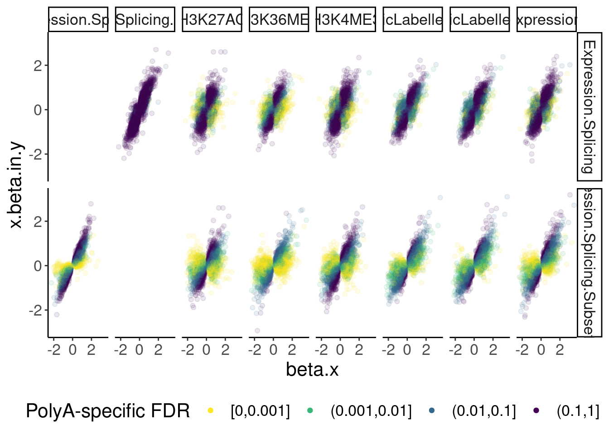
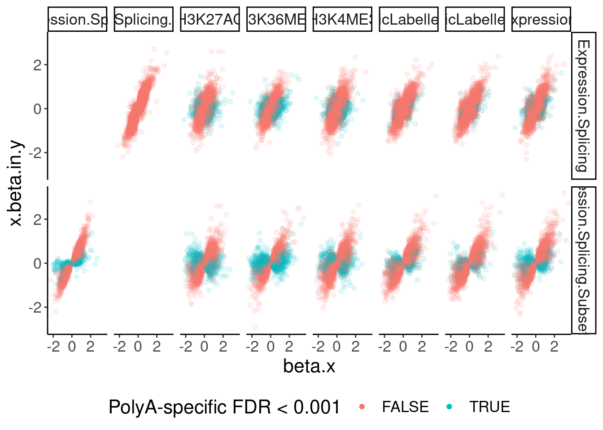
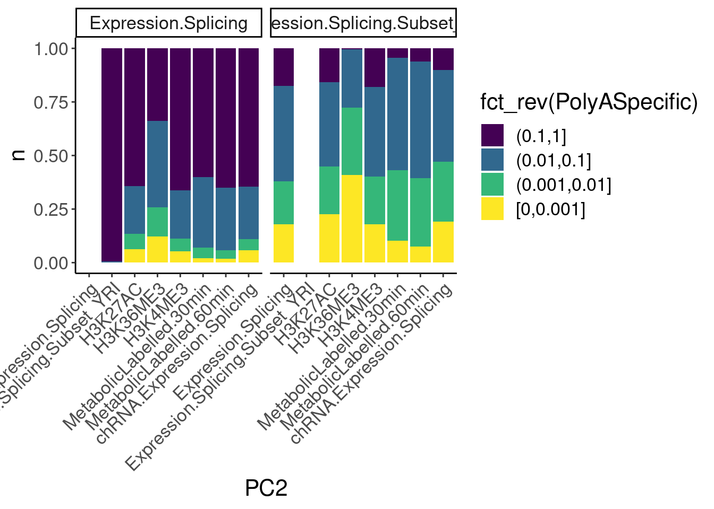
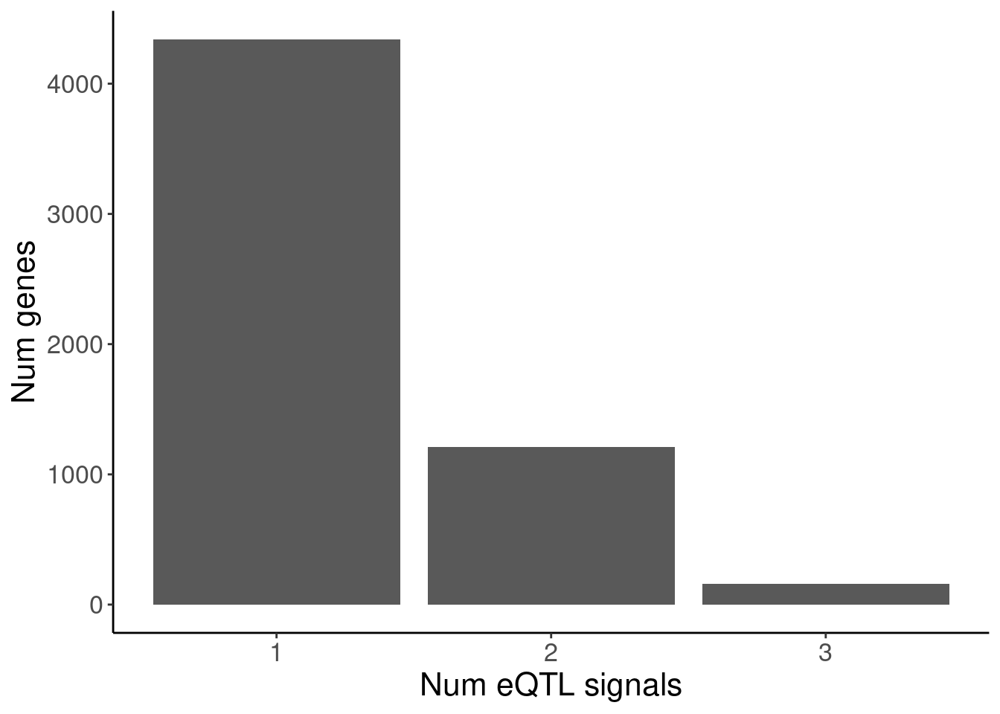
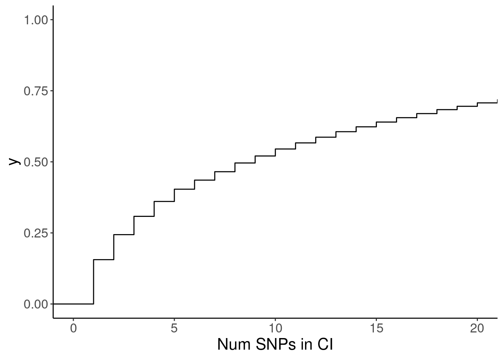
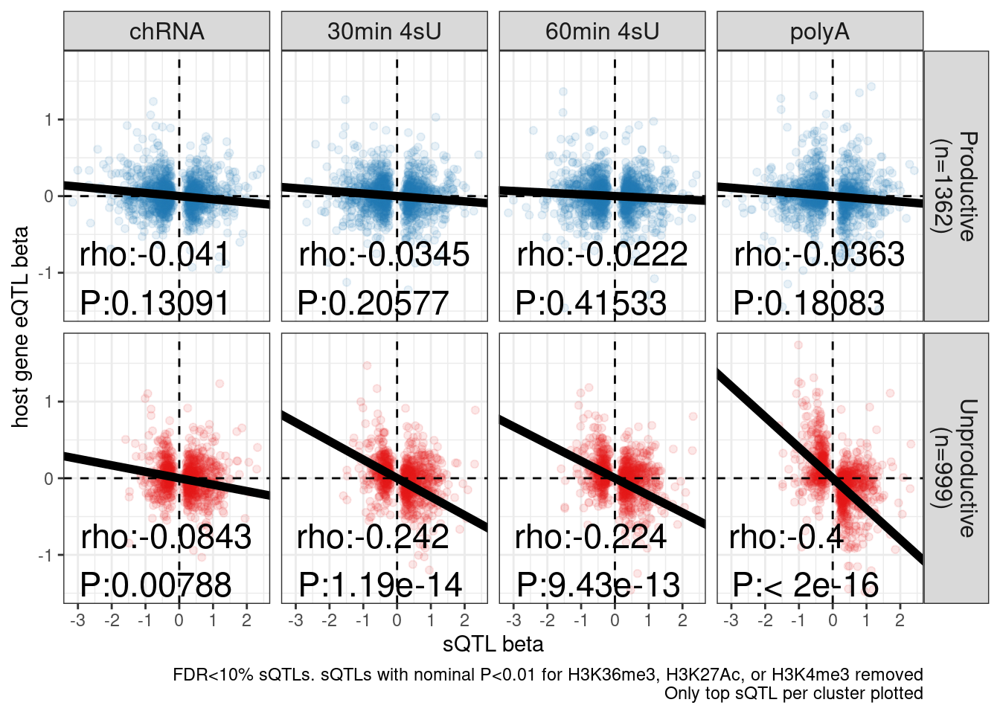

20230324_MakeFigs
2023-03-24
Last updated: 2023-04-25
Checks: 6 1
Knit directory:
ChromatinSplicingQTLs/analysis/
This reproducible R Markdown analysis was created with workflowr (version 1.7.0). The Checks tab describes the reproducibility checks that were applied when the results were created. The Past versions tab lists the development history.
The R Markdown file has unstaged changes. To know which version of
the R Markdown file created these results, you’ll want to first commit
it to the Git repo. If you’re still working on the analysis, you can
ignore this warning. When you’re finished, you can run
wflow_publish to commit the R Markdown file and build the
HTML.
Great job! The global environment was empty. Objects defined in the global environment can affect the analysis in your R Markdown file in unknown ways. For reproduciblity it’s best to always run the code in an empty environment.
The command set.seed(20191126) was run prior to running
the code in the R Markdown file. Setting a seed ensures that any results
that rely on randomness, e.g. subsampling or permutations, are
reproducible.
Great job! Recording the operating system, R version, and package versions is critical for reproducibility.
Nice! There were no cached chunks for this analysis, so you can be confident that you successfully produced the results during this run.
Great job! Using relative paths to the files within your workflowr project makes it easier to run your code on other machines.
Great! You are using Git for version control. Tracking code development and connecting the code version to the results is critical for reproducibility.
The results in this page were generated with repository version ddf600d. See the Past versions tab to see a history of the changes made to the R Markdown and HTML files.
Note that you need to be careful to ensure that all relevant files for
the analysis have been committed to Git prior to generating the results
(you can use wflow_publish or
wflow_git_commit). workflowr only checks the R Markdown
file, but you know if there are other scripts or data files that it
depends on. Below is the status of the Git repository when the results
were generated:
Ignored files:
Ignored: .DS_Store
Ignored: .Rhistory
Ignored: .Rproj.user/
Ignored: analysis/.Rhistory
Ignored: analysis/figure/
Ignored: code/.DS_Store
Ignored: code/.RData
Ignored: code/._report.html
Ignored: code/.ipynb_checkpoints/
Ignored: code/.snakemake/
Ignored: code/APA_Processing/
Ignored: code/Alignments/
Ignored: code/ChromHMM/
Ignored: code/ENCODE/
Ignored: code/ExpressionAnalysis/
Ignored: code/ExtractPhenotypeBedByGenotype.py
Ignored: code/FastqFastp/
Ignored: code/FastqFastpSE/
Ignored: code/FastqSE/
Ignored: code/FineMapping/
Ignored: code/Genotypes/
Ignored: code/H3K36me3_CutAndTag.pdf
Ignored: code/IntronSlopes/
Ignored: code/LR.bed
Ignored: code/LR.seq.bed
Ignored: code/LongReads/
Ignored: code/Metaplots/
Ignored: code/Misc/
Ignored: code/MiscCountTables/
Ignored: code/Multiqc/
Ignored: code/Multiqc_chRNA/
Ignored: code/NonCodingRNA/
Ignored: code/NonCodingRNA_annotation/
Ignored: code/PairwisePi1Traits.P.all.txt.gz
Ignored: code/PeakCalling/
Ignored: code/Phenotypes/
Ignored: code/PlotGruberQTLs/
Ignored: code/PlotQTLs/
Ignored: code/ProCapAnalysis/
Ignored: code/QC/
Ignored: code/QTL_SNP_Enrichment/
Ignored: code/QTLs/
Ignored: code/RPKM_tables/
Ignored: code/ReadLengthMapExperiment/
Ignored: code/ReadLengthMapExperimentResults/
Ignored: code/ReadLengthMapExperimentSpliceCounts/
Ignored: code/ReferenceGenome/
Ignored: code/Rplots.pdf
Ignored: code/Session.vim
Ignored: code/SmallMolecule/
Ignored: code/SplicingAnalysis/
Ignored: code/TODO
Ignored: code/Tehranchi/
Ignored: code/bigwigs/
Ignored: code/bigwigs_FromNonWASPFilteredReads/
Ignored: code/config/.DS_Store
Ignored: code/config/._.DS_Store
Ignored: code/config/.ipynb_checkpoints/
Ignored: code/config/config.local.yaml
Ignored: code/dag.pdf
Ignored: code/dag.png
Ignored: code/dag.svg
Ignored: code/debug.ipynb
Ignored: code/debug_python.ipynb
Ignored: code/deepTools/
Ignored: code/featureCounts/
Ignored: code/featureCountsBasicGtf/
Ignored: code/gwas_summary_stats/
Ignored: code/hyprcoloc/
Ignored: code/igv_session.xml
Ignored: code/isoseqbams/
Ignored: code/log
Ignored: code/logs/
Ignored: code/notebooks/.ipynb_checkpoints/
Ignored: code/pi1/
Ignored: code/rules/.ipynb_checkpoints/
Ignored: code/rules/.molQTL_GWAS_QQ.smk.swp
Ignored: code/rules/OldRules/
Ignored: code/rules/notebooks/
Ignored: code/scratch/
Ignored: code/scripts/.ipynb_checkpoints/
Ignored: code/scripts/GTFtools_0.8.0/
Ignored: code/scripts/__pycache__/
Ignored: code/scripts/liftOverBedpe/liftOverBedpe.py
Ignored: code/snakemake.dryrun.log
Ignored: code/snakemake.log
Ignored: code/snakemake.sbatch.log
Ignored: code/snakemake_profiles/slurm/__pycache__/
Ignored: code/test.introns.bed
Ignored: code/test.introns2.bed
Ignored: code/test.log
Ignored: code/tracks.xml
Ignored: data/.DS_Store
Ignored: data/GWAS_catalog_summary_stats_sources/._list_gwas_summary_statistics_6_Apr_2022-10.csv
Ignored: data/GWAS_catalog_summary_stats_sources/._list_gwas_summary_statistics_6_Apr_2022-11.csv
Ignored: data/GWAS_catalog_summary_stats_sources/._list_gwas_summary_statistics_6_Apr_2022-2.csv
Ignored: data/GWAS_catalog_summary_stats_sources/._list_gwas_summary_statistics_6_Apr_2022-3.csv
Ignored: data/GWAS_catalog_summary_stats_sources/._list_gwas_summary_statistics_6_Apr_2022-4.csv
Ignored: data/GWAS_catalog_summary_stats_sources/._list_gwas_summary_statistics_6_Apr_2022-5.csv
Ignored: data/GWAS_catalog_summary_stats_sources/._list_gwas_summary_statistics_6_Apr_2022-6.csv
Ignored: data/GWAS_catalog_summary_stats_sources/._list_gwas_summary_statistics_6_Apr_2022-7.csv
Ignored: data/GWAS_catalog_summary_stats_sources/._list_gwas_summary_statistics_6_Apr_2022-8.csv
Ignored: data/GWAS_catalog_summary_stats_sources/._list_gwas_summary_statistics_6_Apr_2022.csv
Ignored: data/Metaplots/.DS_Store
Untracked files:
Untracked: analysis/20230417_SusieFinemapEnrichment.Rmd
Untracked: analysis/20230420_FindeQTLsQTLGWAS_Colocs.Rmd
Untracked: code/rules/molQTL_GWAS_QQ.smk
Untracked: data/Ben_ncQTL.groups.tsv
Untracked: output/ColocPlotData.MVP.tsv.gz
Untracked: output/ColocPlotData.NUDT15.tsv.gz
Unstaged changes:
Modified: analysis/20230324_MakeFigs.Rmd
Modified: code/scripts/GenometracksByGenotype
Note that any generated files, e.g. HTML, png, CSS, etc., are not included in this status report because it is ok for generated content to have uncommitted changes.
These are the previous versions of the repository in which changes were
made to the R Markdown (analysis/20230324_MakeFigs.Rmd) and
HTML (docs/20230324_MakeFigs.html) files. If you’ve
configured a remote Git repository (see ?wflow_git_remote),
click on the hyperlinks in the table below to view the files as they
were in that past version.
| File | Version | Author | Date | Message |
|---|---|---|---|---|
| Rmd | ddf600d | Benjmain Fair | 2023-04-14 | add SM splicing timing analysis |
| Rmd | 2ee57a6 | Benjmain Fair | 2023-04-13 | update Rmd |
| Rmd | e8e4a64 | Benjmain Fair | 2023-04-11 | update make figs nb |
| html | e8e4a64 | Benjmain Fair | 2023-04-11 | update make figs nb |
| Rmd | 3b44dfd | Benjmain Fair | 2023-03-30 | add fig nb |
| html | 3b44dfd | Benjmain Fair | 2023-03-30 | add fig nb |
| Rmd | ddbf222 | Benjmain Fair | 2023-03-27 | add pi1 heatmaps nb |
| html | ddbf222 | Benjmain Fair | 2023-03-27 | add pi1 heatmaps nb |
knitr::opts_chunk$set(echo = TRUE, warning = F, message = F)
library(tidyverse)── Attaching packages ─────────────────────────────────────── tidyverse 1.3.1 ──✔ ggplot2 3.3.6 ✔ purrr 0.3.4
✔ tibble 3.1.7 ✔ dplyr 1.0.9
✔ tidyr 1.2.0 ✔ stringr 1.4.0
✔ readr 2.1.2 ✔ forcats 0.5.1── Conflicts ────────────────────────────────────────── tidyverse_conflicts() ──
✖ dplyr::filter() masks stats::filter()
✖ dplyr::lag() masks stats::lag()library(RColorBrewer)
library(data.table)
Attaching package: 'data.table'The following objects are masked from 'package:dplyr':
between, first, lastThe following object is masked from 'package:purrr':
transposelibrary(edgeR)Loading required package: limma# Set theme
theme_set(
theme_classic() +
theme(text=element_text(size=16, family="Helvetica")))
# I use layer a lot, to rotate long x-axis labels
Rotate_x_labels <- theme(axis.text.x = element_text(angle = 45, vjust = 1, hjust=1))
#test plot
ggplot(mtcars, aes(x=mpg, y=cyl)) +
geom_point()
| Version | Author | Date |
|---|---|---|
| ddbf222 | Benjmain Fair | 2023-03-27 |
Intro
I notebook to make figure panels for publication…
Figures to make:
Placeholder, Nascent RNA reveals abundance of NMD-destined transcripts
sQTLs, eQTLs
a. pi heatmap across promoter hQTLs, H3K36me3, chRNA, 4sU, polyA. Number of QTLs in margin
b. Enrichment of annotations in transcriptional vs post-transcriptional eQTLs. Classify transcriptional vs post-transcriptional by comparing hQTL to eQTL significance (or effect size).
c. QQ-plot of eQTL signal, grouped by hQTLs, sQTLs that affect productive junctions, and sQTLs that affect unproductive junctions
d. polyA sQTL beta vs polyA eQTL beta scatter, faceted by stable vs unstable.
e. Beta vs beta spearman slope with different lines for chRNA, 4sU, polyA, faceted by stable vs unstable
- Contribution of splicing-mediated decay to complex trait
a. A single GWAS trait (ie MS) QQ plot, colored by splicing-mediated eQTLs, transcription-mediated QTLs, productive-AS sQTLs
b. Heatmap of similar enrichment in A, but across many traits
c. Example locus showing colocalization eQTL/sQTL/GWAS scatter, and IGV screenshot of the splicing and eQTL effect
- The effect of splice-modifying drugs on gene expression
a. Cartoon showing inset with risdiplam bulge repair, along with dose:response trend showing the tested doses and the increasing response in GA|GT but not AG|GT splicing.
b. Scatter that shows splicing vs expression effect, faeted by productive unproductive. Or something like that
c. Something that shows the 4B effect is not in chRNA
d. An illustrative example effect in IGV.
Supplemental Figures to make
Placeholder
sQTLs, eQTLs
a. Total number of QTLs in each type of type of trait. Bargraph, with multiple lines for different FDR levels
b. Correlation of effect sizes across promoter hQTLs, H3K36me3, chRNA, 4sU, polyA
i. Need to select set of eQTLs to plot… Previous versions of this plot I tend to just pick colocalized things. That would be easiest.
c. sQTL QQ plot, with different colors for post-transcriptional eQTLs to transcriptional eQTLs (like what Carlos has done in red and black)
d. eQTL QQ plot, with different colors for H3K27AC QTLs and sQTLs
e. lead gene-wise sQTLs are not strongly enriched for eQTLs compared to control SNPs. eQTL QQ-plot with top gene-wise sQTL SNP, compared to some controls. Or do this with a pi1, and can use various thresholds
f. enrichment of eQTL signals is explained by both primary and non-primary eQTL signals (FigX). More precisely, we used the SuSiE finemapping approach which does not assume a single causal SNP for each expression trait, and can thus be used to finemap multiple eQTL signals per gene. We find that approximately x% of primary signals could be overlapped with sQTLs, compared to y% of primary signals that we could overlap to hQTLs. Furthermore, x% and y% of non primary signals could be mapped sQTLs and hQTLs, respectively
g. More extensive version of 2d, so we can explain the nuances in filtering out transcriptional effects, and there are some lingering non-NMD effects that are degraded in cytoplasm
- Contribution of splicing-mediated decay to complex trait
a. Colocalization framework cartoon
b. Version of 3b that uses colocalization. Shown as barplots similar to Phoenix’s paper
- The effect of splice-modifying drugs on gene expression
a. In total, we observe x% of observed non-canonincal GA-GT splice sites are activated with x criteria… ecdf of spearman correlation coefficient, for different groups of 5’ss.
Figure2
A
pi heatmap of gene-feature QTLs. Num QTLs in margin.
Only include hQTLs at promoter, chRNA, 4sU, and polyA.
library(qvalue)
library(viridis)
PeaksToTSS <- Sys.glob("../code/Misc/PeaksClosestToTSS/*_assigned.tsv.gz") %>%
setNames(str_replace(., "../code/Misc/PeaksClosestToTSS/(.+?)_assigned.tsv.gz", "\\1")) %>%
lapply(read_tsv) %>%
bind_rows(.id="ChromatinMark") %>%
mutate(GenePeakPair = paste(gene, peak, sep = ";")) %>%
distinct(ChromatinMark, peak, gene, .keep_all=T)
PC1.filter <- c("Expression.Splicing", "MetabolicLabelled.30min", "MetabolicLabelled.60min", "H3K36ME3", "H3K27AC", "H3K4ME3", "H3K4ME1", "Expression.Splicing.Subset_YRI", "chRNA.Expression.Splicing")
dat <- fread("../code/pi1/PairwisePi1Traits.P.all.txt.gz") %>%
filter((PC1 %in% PC1.filter) & (PC2 %in% PC1.filter))
dat$PC1 %>% unique()[1] "Expression.Splicing" "Expression.Splicing.Subset_YRI"
[3] "chRNA.Expression.Splicing" "MetabolicLabelled.30min"
[5] "MetabolicLabelled.60min" "H3K27AC"
[7] "H3K4ME3" "H3K4ME1"
[9] "H3K36ME3" PhenotypeAliases <- read_tsv("../data/Phenotypes_recode_for_Plotting.txt")Many genes have multiple promoters that should all be accounted for as potential transcriptional effects. So calculating pi1 can be tricky. I want to ask the question, “What fraction of eQTLs have a promoter hQTL in at least one of the promoters?”… I have already solved this problem… For each gene, get lowest P value for across tests (ie all the promoters) and use that a a test statistic to come up with a new Pvalue, to calculate pi1. The test statistic distribution under the null can be approximate by drawing from uniform n times.
First we need to approximate that null using runif…
MaxSampleSizeToCreateANull <- 250
NSamplesToEstimateDistribution <- 10000
NullSimulatedTestStats <- matrix(nrow=MaxSampleSizeToCreateANull, ncol=NSamplesToEstimateDistribution)
rownames(NullSimulatedTestStats) <- paste0("runif_samplesize", 1:MaxSampleSizeToCreateANull)
colnames(NullSimulatedTestStats) <- paste0("Sample_", 1:NSamplesToEstimateDistribution)
for (i in 1:MaxSampleSizeToCreateANull){
SampleSizeFromUniform <- i
SampledDat <- matrix(runif(SampleSizeFromUniform*NSamplesToEstimateDistribution), nrow=NSamplesToEstimateDistribution)
SampleDatNullTestStatistics <- -log10(apply(SampledDat, 1, min))
NullSimulatedTestStats[i,] <- SampleDatNullTestStatistics
}
NullSimulatedTestStats %>%
as.data.frame() %>%
rownames_to_column("runif_samplesize") %>%
slice(1:250) %>%
mutate(runif_samplesize = as.numeric(str_remove(runif_samplesize, "runif_samplesize"))) %>%
gather(key="Sample", value="value", -runif_samplesize) %>%
ggplot(aes(x=value, color=runif_samplesize, group=runif_samplesize)) +
geom_density() +
scale_color_viridis_c() +
theme_bw() +
labs(x="Test statistic under null\n-log10(MinP) across n draws from uniform", color="n")
| Version | Author | Date |
|---|---|---|
| ddbf222 | Benjmain Fair | 2023-03-27 |
ecdf.functions <- apply(NullSimulatedTestStats, 1, ecdf)
ecdf.functions[[1]](1)[1] 0.9034Make a function to calculate pi1
# pi0est function breaks sometimes. this wrapper function returns 1 when that happens
CalculatePi1 <- function (dat.in, ...) {
return(tryCatch(1-pi0est(dat.in$Pvals.For.Pi1, ...)$pi0, error=function(e) 1))
}And now, recode peaks as promoters, and calculate test statistics.
Recode.PCs = c("ActivatingMark_HostGenePromoter"="Promoter marks*", "H3K36ME3"="H3K36ME3", "chRNA.Expression.Splicing"="chRNA", "MetabolicLabelled.30min"="4sU 30min", "MetabolicLabelled.60min"="4sU 60min", "Expression.Splicing.Subset_YRI"="polyA YRI", "Expression.Splicing"="polyA")
ActivatingMarksToConsider <- c("H3K27AC")
ProcessPi1HeatmapDat <- function(FDR.cutoff=0.1){
dat.split <- dat %>%
filter(FDR.x < FDR.cutoff) %>%
mutate(PC1 = case_when(
paste(GeneLocus, P1, sep=";") %in% PeaksToTSS$GenePeakPair & PC1 %in% ActivatingMarksToConsider ~ "ActivatingMark_HostGenePromoter",
P1 %in% PeaksToTSS$peak ~ "ActivatingMark_OtherGenePromoter",
PC1 %in% c("H3K4ME1", "H3K4ME3", "H3K27AC") ~ "ActivatingMark_Enhancer",
TRUE ~ PC1
)) %>%
mutate(PC2 = case_when(
paste(GeneLocus, P2, sep=";") %in% PeaksToTSS$GenePeakPair & PC2 %in% ActivatingMarksToConsider ~ "ActivatingMark_HostGenePromoter",
P2 %in% PeaksToTSS$peak ~ "ActivatingMark_OtherGenePromoter",
PC2 %in% c("H3K4ME1", "H3K4ME3", "H3K27AC") ~ "ActivatingMark_Enhancer",
TRUE ~ PC2
)) %>%
group_by(PC1, P1, PC2) %>%
mutate(test.stat.obs = -log10(min(trait.x.p.in.y))) %>%
ungroup() %>%
add_count(PC1, P1, PC2) %>%
filter(n<=250) %>%
group_by(PC1, PC2) %>%
rowwise() %>%
mutate(Pvals.For.Pi1 = 1-ecdf.functions[[n]](test.stat.obs)) %>%
ungroup() %>%
select(PC1, PC2, Pvals.For.Pi1) %>%
filter(!PC1==PC2) %>%
split(paste(.$PC1, .$PC2, sep = ";"))
dat.out <- lapply(dat.split, CalculatePi1, pi0.method="bootstrap") %>%
unlist() %>%
data.frame(pi1=.) %>%
rownames_to_column("PC1_PC2") %>%
separate(PC1_PC2, into=c("PC1", "PC2"), sep=';') %>%
filter((PC1%in% c(PC1.filter, "ActivatingMark_HostGenePromoter") & (PC2%in% c(PC1.filter, "ActivatingMark_HostGenePromoter") ))) %>%
mutate(TextColor = case_when(
pi1 >= 0.7 ~ "white",
TRUE ~ "black"
)) %>%
mutate(PC1 = recode(PC1, !!!Recode.PCs)) %>%
mutate(PC2 = recode(PC2, !!!Recode.PCs)) %>%
mutate(PC1 = factor(PC1, levels=Recode.PCs)) %>%
mutate(PC2 = factor(PC2, levels=Recode.PCs))
P <- ggplot(dat.out, aes(x=PC1, y=PC2, fill=pi1, color=TextColor)) +
geom_raster() +
geom_text(aes(label=signif(pi1*100, 2))) +
scale_color_identity() +
scale_fill_viridis_c(option="A", direction = -1, limits=c(0,1)) +
coord_flip() +
scale_x_discrete(limits=rev) +
theme_classic() +
theme(axis.text.x = element_text(angle = 90, vjust = 0.5, hjust=1)) +
labs(x="Discovery QTL phenotype", y="Phenotype assessed for overlap", caption=paste("*Promoter marks include", paste(ActivatingMarksToConsider, collapse=",")))
return(list(dat=dat, P=P))
}
ProcessPi1HeatmapDat()$P
Redo, but also consider both H3K27AC and H3K4ME3 at promoter…
ActivatingMarksToConsider <- c("H3K27AC", "H3K4ME3")
ProcessPi1HeatmapDat()$P
Redo but consider H3K4ME3, H3K4ME1, and H3K27AC
ActivatingMarksToConsider <- c("H3K27AC", "H3K4ME3", "H3K4ME1")
ProcessPi1HeatmapDat()$P
In theory things should only go up as you include H3K4ME1, but that is not the case. This phenomena is something I’ve noticed before, and I think it’s because adding non-overlapping phenotypes to promoter marks only modestly increases the lowest P-value, but more greatly can increase the n number of features used to determine the null.
So, let’s now include H3K4ME1. This is more thought of as an enhancer rather than promoter mark anyway.
So now let’s redo, but only include H3K27AC and H3K4ME3 but use lower FDR cutoffs.
ActivatingMarksToConsider <- c("H3K27AC", "H3K4ME3")
ProcessPi1HeatmapDat(FDR.cutoff = 0.05)$P
ProcessPi1HeatmapDat(FDR.cutoff = 0.01)$P
Ok, cool. I mean slightly different versions. I’ll leave it to Yang as to which version should be the main figure, and perhaps we can include alternate versions as supplements. In every case though I notice that the top right corner is dark, suggesting histone effects can be picked up pretty well in downstream assays (ie polyA), but the bottom left corner is light, because of post-transcriptional mechanisms of gene regulation.
- save final prettier versions, with axes flipped (yang likes discovery on x-axis)
- save alternate versions for supplement, with different FDR thresholds
B
Now I need a way to classify eQTLs as transcriptional or post-transcriptional. Carlos has previously used effect sizes in polyA vs chRNA. I may do something similar. First let’s some scatter plots of effect sizes
FDR.cutoff <- 0.1
ActivatingMarksToConsider <- c("H3K27AC", "H3K4ME3")
dat.recoded <- dat %>%
filter(FDR.x < FDR.cutoff) %>%
mutate(PC1 = case_when(
paste(GeneLocus, P1, sep=";") %in% PeaksToTSS$GenePeakPair & PC1 %in% ActivatingMarksToConsider ~ PC1,
P1 %in% PeaksToTSS$peak ~ "ActivatingMark_OtherGenePromoter",
PC1 %in% c("H3K4ME1", "H3K4ME3", "H3K27AC") ~ "ActivatingMark_Enhancer",
TRUE ~ PC1
)) %>%
mutate(PC2 = case_when(
paste(GeneLocus, P2, sep=";") %in% PeaksToTSS$GenePeakPair & PC2 %in% ActivatingMarksToConsider ~ PC2,
P1 %in% PeaksToTSS$peak ~ "ActivatingMark_OtherGenePromoter",
PC2 %in% c("H3K4ME1", "H3K4ME3", "H3K27AC") ~ "ActivatingMark_Enhancer",
TRUE ~ PC2
))
dat.recoded %>%
filter(PC1 == "Expression.Splicing") %>%
filter(!str_detect(PC2, "ActivatingMark_Enhancer")) %>%
filter(!str_detect(PC2, "ActivatingMark_OtherGenePromoter")) %>%
group_by(PC1, P1, PC2) %>%
slice(which.min(trait.x.p.in.y)) %>%
ungroup() %>%
ggplot(aes(x=beta.x, y=x.beta.in.y)) +
geom_point(alpha=0.1) +
facet_wrap(~PC2) +
labs(x="eQTL beta", y="facetQTL beta")
| Version | Author | Date |
|---|---|---|
| 3b44dfd | Benjmain Fair | 2023-03-30 |
I think what I want to do is to first consider eQTLs in polyA, then perform one-sided test for significant differences in beta for corresponding feature in chRNA/promoterMarks. For simplicity, I think I can use Z-test, like this, but first, to check that this approach is reasonable, I think I’m going to check that Z-scores from random trait pairs closely follow normal distribution as they should under null. Also, I note that winners curse will bias things since I am conditioning on significant QTLs for polyA, then assessing difference in betas between polyA vs chRNA/promoter. But since only the polyA beta is subject to winners curse bias, it will turn out being overly convervative for the SNP enrichments I’m trying to highlight (because some transcriptional QTLs might erronesouly be classified as non-trancriptional) so i think that’s acceptable.
PC1.filter = c("Expression.Splicing", "Expression.Splicing.Subset_YRI")
dat.ZsFromAllTraitPairs <- dat.recoded %>%
filter(PC1 %in% PC1.filter) %>%
filter(!str_detect(PC2, "ActivatingMark_Enhancer")) %>%
filter(!str_detect(PC2, "ActivatingMark_OtherGenePromoter")) %>%
group_by(PC1, P1, PC2) %>%
slice(which.min(trait.x.p.in.y)) %>%
ungroup() %>%
filter(!is.na(x.beta.in.y)) %>%
distinct(PC1, P1, PC2, .keep_all=T) %>%
mutate(Z = (abs(beta.x)-abs(x.beta.in.y)*sign(beta.x)*sign(x.beta.in.y))/sqrt(x.beta_se.in.y**2 + beta_se.x**2)) %>%
mutate(OneSidedZTest.P = pnorm(Z, lower.tail=F)) %>%
group_by(PC1, PC2) %>%
mutate(q = qvalue(OneSidedZTest.P)$qvalues) %>%
mutate(PolyASpecific = cut(q, breaks=c(0, 0.001, 0.01, 0.1, 1), include.lowest=T, ordered_result = T))
dat.ZsFromAllTraitPairs %>%
ggplot(aes(x=beta.x, y=x.beta.in.y, color=PolyASpecific)) +
geom_point(alpha=0.1) +
scale_color_viridis_d(direction=-1) +
facet_grid(PC1~PC2) +
guides(colour = guide_legend(override.aes = list(alpha = 1))) +
labs(color="PolyA-specific FDR") +
theme(legend.position="bottom")
dat.ZsFromAllTraitPairs %>%
ggplot(aes(x=beta.x, y=x.beta.in.y, color=PolyASpecific=="[0,0.001]")) +
geom_point(alpha=0.1) +
facet_grid(PC1~PC2) +
guides(colour = guide_legend(override.aes = list(alpha = 1))) +
labs(color="PolyA-specific FDR < 0.001") +
theme(legend.position="bottom")
dat.ZsFromAllTraitPairs %>%
count(PC1, PC2, PolyASpecific) %>%
ggplot(aes(x=PC2, y=n, fill=fct_rev(PolyASpecific))) +
geom_col(position="stack") +
facet_wrap(~PC1) +
scale_fill_viridis_d(direction=1) +
Rotate_x_labels
dat.ZsFromAllTraitPairs %>%
count(PC1, PC2, PolyASpecific) %>%
ggplot(aes(x=PC2, y=n, fill=fct_rev(PolyASpecific))) +
geom_col(position="fill") +
facet_wrap(~PC1) +
scale_fill_viridis_d(direction=1) +
Rotate_x_labels
Okay, keep in mind that there is both biology and power issues at play… Biologically, I would expect very few polyA-specific eQTLs when comparing to 4sU, yet there are basically the same amount of polyA-specific eQTLs in that comparison as when comparing to chRNA. One could chalk that up to the 4sU dataset being so underpowered, that a lot more eQTLs would be considered polyA specific. Similarly, that could explain why so many are polyA-specific when comparing to the relatively underpowered H3K36me3 dataset.
Let’s explore Carlos’ susie finemapping output
susie.finemap <- fread("/project2/yangili1/cfbuenabadn/ChromatinSplicingQTLs/code/FineMapping/susie_runs_Geuvadis/susie_output.tab")
susie.finemap %>%
distinct(cs_gene, cs_names) %>%
count(cs_gene) %>%
ggplot(aes(x=n)) +
geom_bar() +
labs(y="Num genes", x="Num eQTL signals")
susie.finemap %>%
group_by(cs_gene, cs_names) %>%
summarise(PIP.sum = sum(cs_pip)) %>%
ungroup() %>%
ggplot(aes(x=PIP.sum)) +
stat_ecdf() +
labs(x="Sum PIP in CI", title="These are 95% CIs") +
coord_cartesian(xlim=c(0.9,1))
susie.finemap %>%
count(cs_gene, cs_names) %>%
ggplot(aes(x=n)) +
stat_ecdf() +
coord_cartesian(xlim=c(0,20)) +
labs(x="Num SNPs in CI")
Ok great, next I will intersect the finemapped SNPs with annotations, and sum up the number of SNPs in each annotation (weighted by PIP), and compare transcriptional vs post-transcriptional eQTLs. I did some work in the snakemake to intersect Carlos’s finemap output with SNP annotations and now let’s explore that output.
finemappip.annotation.intersections <- fread("../code/QTL_SNP_Enrichment/FinemapIntersections_Susie/YRI.bed.gz", col.names=c("chrom", "start", "stop", "name", "pip","featChrom", "featStart", "featStop","Annotation", "Overlap")) %>%
separate(name, into=c("snp", "eGene", "Signal"), sep = "_") %>%
mutate(Annotation = str_replace_all(Annotation, "_0$", "_UnannotatedButObserved")) %>%
mutate(Annotation = str_replace_all(Annotation, "_1$", "_Annotated")) %>%
mutate(Annotation = str_replace_all(Annotation, "^\\d+?_", "ChromHMM:")) %>%
filter(!is.na(Annotation)) %>%
mutate(Annotation = if_else(Annotation==".", "No annotation", Annotation)) %>%
filter(!str_detect(Annotation, "^ncRNA")) %>%
filter(!Annotation=="No annotation")
transcriptional.PC2s <- c("chRNA.Expression.Splicing", "H3K27AC", "H3K4ME3")
transcriptional.eQTLs <- dat.ZsFromAllTraitPairs %>%
filter(PC2 %in% transcriptional.PC2s) %>%
mutate(IsPolyASpecific = if_else(q < 0.001, "PostTxn", "Txn"))
count(transcriptional.eQTLs,PC1, PC2, IsPolyASpecific)# A tibble: 12 × 4
# Groups: PC1, PC2 [6]
PC1 PC2 IsPolyASpecific n
<chr> <chr> <chr> <int>
1 Expression.Splicing H3K27AC PostTxn 523
2 Expression.Splicing H3K27AC Txn 7751
3 Expression.Splicing H3K4ME3 PostTxn 473
4 Expression.Splicing H3K4ME3 Txn 8447
5 Expression.Splicing chRNA.Expression.Splici… PostTxn 565
6 Expression.Splicing chRNA.Expression.Splici… Txn 9275
7 Expression.Splicing.Subset_YRI H3K27AC PostTxn 760
8 Expression.Splicing.Subset_YRI H3K27AC Txn 2610
9 Expression.Splicing.Subset_YRI H3K4ME3 PostTxn 643
10 Expression.Splicing.Subset_YRI H3K4ME3 Txn 2935
11 Expression.Splicing.Subset_YRI chRNA.Expression.Splici… PostTxn 746
12 Expression.Splicing.Subset_YRI chRNA.Expression.Splici… Txn 3167finemappip.annotation.intersections %>%
filter(Signal == "L1") %>%
left_join(transcriptional.eQTLs, by=c("eGene"="P1")) %>%
filter(!is.na(IsPolyASpecific)) %>%
group_by(Annotation, IsPolyASpecific, PC1, PC2) %>%
summarise(SumInAnnotation = sum(pip, na.rm=T)) %>%
ungroup() %>%
group_by(IsPolyASpecific, PC1, PC2) %>%
mutate(TotalPIP = sum(SumInAnnotation, na.rm=T)) %>%
ungroup() %>%
mutate(FractionPIP_in_Annotation = SumInAnnotation/TotalPIP ) %>%
dplyr::select(FractionPIP_in_Annotation, PC1, PC2, IsPolyASpecific, Annotation) %>%
pivot_wider(names_from = "IsPolyASpecific", values_from = c("FractionPIP_in_Annotation")) %>%
mutate(Enrichment = log2(PostTxn/Txn)) %>%
ggplot(aes(x=Annotation, y=Enrichment)) +
geom_col() +
theme_bw() +
theme(axis.text.x = element_text(angle = 45, vjust = 1, hjust=1)) +
coord_flip() +
facet_grid(PC2~PC1) +
labs(x = "Annotation", y="Finemapping posterior mass fold enrichment\n(Txn <-- --> PostTxn)")
set.seed(0)
results <- list()
for (i in 1:100){
print(paste("Bootstrap resample", i))
transcriptional.eQTLs.sample <- transcriptional.eQTLs %>%
group_by(PC1, PC2, IsPolyASpecific) %>%
sample_frac(replace=T)
results[[i]] <-
finemappip.annotation.intersections %>%
filter(Signal == "L1") %>%
left_join(transcriptional.eQTLs.sample, by=c("eGene"="P1")) %>%
filter(!is.na(IsPolyASpecific)) %>%
group_by(Annotation, IsPolyASpecific, PC1, PC2) %>%
summarise(SumInAnnotation = sum(pip, na.rm=T)) %>%
ungroup() %>%
group_by(IsPolyASpecific, PC1, PC2) %>%
mutate(TotalPIP = sum(SumInAnnotation, na.rm=T)) %>%
ungroup() %>%
mutate(FractionPIP_in_Annotation = SumInAnnotation/TotalPIP ) %>%
dplyr::select(FractionPIP_in_Annotation, PC1, PC2, IsPolyASpecific, Annotation) %>%
pivot_wider(names_from = "IsPolyASpecific", values_from = c("FractionPIP_in_Annotation")) %>%
mutate(Enrichment = log2(PostTxn/Txn)) %>%
mutate(i=i)
}[1] "Bootstrap resample 1"
[1] "Bootstrap resample 2"
[1] "Bootstrap resample 3"
[1] "Bootstrap resample 4"
[1] "Bootstrap resample 5"
[1] "Bootstrap resample 6"
[1] "Bootstrap resample 7"
[1] "Bootstrap resample 8"
[1] "Bootstrap resample 9"
[1] "Bootstrap resample 10"
[1] "Bootstrap resample 11"
[1] "Bootstrap resample 12"
[1] "Bootstrap resample 13"
[1] "Bootstrap resample 14"
[1] "Bootstrap resample 15"
[1] "Bootstrap resample 16"
[1] "Bootstrap resample 17"
[1] "Bootstrap resample 18"
[1] "Bootstrap resample 19"
[1] "Bootstrap resample 20"
[1] "Bootstrap resample 21"
[1] "Bootstrap resample 22"
[1] "Bootstrap resample 23"
[1] "Bootstrap resample 24"
[1] "Bootstrap resample 25"
[1] "Bootstrap resample 26"
[1] "Bootstrap resample 27"
[1] "Bootstrap resample 28"
[1] "Bootstrap resample 29"
[1] "Bootstrap resample 30"
[1] "Bootstrap resample 31"
[1] "Bootstrap resample 32"
[1] "Bootstrap resample 33"
[1] "Bootstrap resample 34"
[1] "Bootstrap resample 35"
[1] "Bootstrap resample 36"
[1] "Bootstrap resample 37"
[1] "Bootstrap resample 38"
[1] "Bootstrap resample 39"
[1] "Bootstrap resample 40"
[1] "Bootstrap resample 41"
[1] "Bootstrap resample 42"
[1] "Bootstrap resample 43"
[1] "Bootstrap resample 44"
[1] "Bootstrap resample 45"
[1] "Bootstrap resample 46"
[1] "Bootstrap resample 47"
[1] "Bootstrap resample 48"
[1] "Bootstrap resample 49"
[1] "Bootstrap resample 50"
[1] "Bootstrap resample 51"
[1] "Bootstrap resample 52"
[1] "Bootstrap resample 53"
[1] "Bootstrap resample 54"
[1] "Bootstrap resample 55"
[1] "Bootstrap resample 56"
[1] "Bootstrap resample 57"
[1] "Bootstrap resample 58"
[1] "Bootstrap resample 59"
[1] "Bootstrap resample 60"
[1] "Bootstrap resample 61"
[1] "Bootstrap resample 62"
[1] "Bootstrap resample 63"
[1] "Bootstrap resample 64"
[1] "Bootstrap resample 65"
[1] "Bootstrap resample 66"
[1] "Bootstrap resample 67"
[1] "Bootstrap resample 68"
[1] "Bootstrap resample 69"
[1] "Bootstrap resample 70"
[1] "Bootstrap resample 71"
[1] "Bootstrap resample 72"
[1] "Bootstrap resample 73"
[1] "Bootstrap resample 74"
[1] "Bootstrap resample 75"
[1] "Bootstrap resample 76"
[1] "Bootstrap resample 77"
[1] "Bootstrap resample 78"
[1] "Bootstrap resample 79"
[1] "Bootstrap resample 80"
[1] "Bootstrap resample 81"
[1] "Bootstrap resample 82"
[1] "Bootstrap resample 83"
[1] "Bootstrap resample 84"
[1] "Bootstrap resample 85"
[1] "Bootstrap resample 86"
[1] "Bootstrap resample 87"
[1] "Bootstrap resample 88"
[1] "Bootstrap resample 89"
[1] "Bootstrap resample 90"
[1] "Bootstrap resample 91"
[1] "Bootstrap resample 92"
[1] "Bootstrap resample 93"
[1] "Bootstrap resample 94"
[1] "Bootstrap resample 95"
[1] "Bootstrap resample 96"
[1] "Bootstrap resample 97"
[1] "Bootstrap resample 98"
[1] "Bootstrap resample 99"
[1] "Bootstrap resample 100"finemappip.annotation.intersections$Annotation %>% unique() [1] "ChromHMM:Weak_Promoter"
[2] "ChromHMM:Active_Promoter"
[3] "ChromHMM:Heterochrom/lo"
[4] "ChromHMM:Repressed"
[5] "SpliceBranchpointRegion_UnannotatedButObserved"
[6] "ChromHMM:Txn_Elongation"
[7] "SpliceAcceptor_UnannotatedButObserved"
[8] "SpliceDonor_UnannotatedButObserved"
[9] "ChromHMM:Txn_Transition"
[10] "SpliceDonor_Annotated"
[11] "ChromHMM:Strong_Enhancer"
[12] "ChromHMM:Weak_Enhancer"
[13] "ChromHMM:Weak_Txn"
[14] "SpliceAcceptor_Annotated"
[15] "SpliceBranchpointRegion_Annotated"
[16] "PAS_Region"
[17] "ChromHMM:Repetitive/CNV"
[18] "ChromHMM:Poised_Promoter"
[19] "ChromHMM:Insulator"
[20] "miRNA_BS" bind_rows(results) %>%
# filter(PC1 == "Expression.Splicing" & PC2 == "H3K27AC" & Annotation == "ChromHMM:Active_Promoter")
group_by(Annotation, PC1, PC2) %>%
summarise(mean = mean(Enrichment, na.rm=T),
Percentile10 = quantile(Enrichment, probs = 0.05, na.rm=T),
Percentile90 = quantile(Enrichment, probs = 0.95, na.rm=T)) %>%
mutate(color = case_when(
str_detect(Annotation, "^Splic") ~ "Splice region",
str_detect(Annotation, "Enhancer") ~ "Enhancer",
str_detect(Annotation, "Promoter") ~ "Promoter",
str_detect(Annotation, "Txn") ~ "Transcribed",
str_detect(Annotation, "ChromHMM") ~ "Other ChromHMM",
TRUE ~ "Other"
)) %>%
ggplot(aes(x=Annotation, y=mean, color=color)) +
geom_hline(yintercept = 0) +
geom_point() +
geom_errorbar(aes(ymin=Percentile10, ymax=Percentile90)) +
theme_bw() +
theme(axis.text.x = element_text(angle = 45, vjust = 1, hjust=1)) +
coord_flip() +
facet_grid(PC2~PC1) +
labs(x = "Annotation", y="Finemapping posterior mass fold enrichment\n(ChromatinQTL|eQTL <-- --> sQTL)",
caption = "Bootsrapped 90% confidence interval")
Hmm, the results aren’t quite what I was expecting, and they aren’t so consistent across the different ways to classify eQTLs as post txn vs txn (H3K27AC, H3K4ME3, chRNA). I wonder how consistent the classifications are…
transcriptional.eQTLs <- dat.ZsFromAllTraitPairs %>%
filter(PC2 %in% transcriptional.PC2s) %>%
mutate(IsPolyASpecific = if_else(q < 0.01, "PostTxn", "Txn"))
transcriptional.eQTLs %>%
group_by(PC1) %>%
add_count(P1) %>%
filter(n==3) %>%
ungroup() %>%
mutate(IsPolyASpecific = IsPolyASpecific=="Txn") %>%
group_by(P1, PC1) %>%
summarise(TxnQTL_In_HowManyOf3 = sum(IsPolyASpecific)) %>%
ggplot(aes(x=TxnQTL_In_HowManyOf3)) +
geom_bar() +
facet_wrap(~PC1) +
labs("How many of the 3 methods is a gene classified as txn eQTL")
transcriptional.eQTLs <- dat.ZsFromAllTraitPairs %>%
filter(PC2 %in% transcriptional.PC2s) %>%
mutate(IsPolyASpecific = if_else(q < 0.001, "PostTxn", "Txn"))
transcriptional.eQTLs %>%
group_by(PC1) %>%
add_count(P1) %>%
filter(n==3) %>%
ungroup() %>%
mutate(IsPolyASpecific = IsPolyASpecific=="Txn") %>%
group_by(P1, PC1) %>%
summarise(TxnQTL_In_HowManyOf3 = sum(IsPolyASpecific)) %>%
ggplot(aes(x=TxnQTL_In_HowManyOf3)) +
geom_bar() +
facet_wrap(~PC1) +
labs("How many of the 3 methods is a gene classified as txn eQTL")
| Version | Author | Date |
|---|---|---|
| e8e4a64 | Benjmain Fair | 2023-04-11 |
transcriptional.eQTLs <- dat.ZsFromAllTraitPairs %>%
filter(PC2 %in% transcriptional.PC2s) %>%
mutate(IsPolyASpecific = if_else(q < 0.0001, "PostTxn", "Txn"))
transcriptional.eQTLs %>%
group_by(PC1) %>%
add_count(P1) %>%
filter(n==3) %>%
ungroup() %>%
mutate(IsPolyASpecific = IsPolyASpecific=="Txn") %>%
group_by(P1, PC1) %>%
summarise(TxnQTL_In_HowManyOf3 = sum(IsPolyASpecific)) %>%
ggplot(aes(x=TxnQTL_In_HowManyOf3)) +
geom_bar() +
facet_wrap(~PC1) +
labs("How many of the 3 methods is a gene classified as txn eQTL")
| Version | Author | Date |
|---|---|---|
| e8e4a64 | Benjmain Fair | 2023-04-11 |
Ok so playing with the thresholds still doesn’t get a nice clean/consistent classification between the different methods… It’s not like there are a lot of genes that are in txn class in all 3 and in non-txn class in all 3. There are a lot of in-betweens. Let’s maybe just try reclassifying them as txn if they are significant any of the three…
transcriptional.eQTLs <- dat.ZsFromAllTraitPairs %>%
filter(PC2 %in% transcriptional.PC2s) %>%
group_by(PC1) %>%
add_count(P1) %>%
filter(n==3) %>%
ungroup() %>%
group_by(P1, PC1) %>%
mutate(IsPolyASpecific = if_else(any(q < 0.001), "PostTxn", "Txn")) %>%
ungroup()
count(transcriptional.eQTLs,PC1, PC2, IsPolyASpecific)# A tibble: 12 × 4
PC1 PC2 IsPolyASpecific n
<chr> <chr> <chr> <int>
1 Expression.Splicing H3K27AC PostTxn 1027
2 Expression.Splicing H3K27AC Txn 7107
3 Expression.Splicing H3K4ME3 PostTxn 1027
4 Expression.Splicing H3K4ME3 Txn 7107
5 Expression.Splicing chRNA.Expression.Splici… PostTxn 1027
6 Expression.Splicing chRNA.Expression.Splici… Txn 7107
7 Expression.Splicing.Subset_YRI H3K27AC PostTxn 1274
8 Expression.Splicing.Subset_YRI H3K27AC Txn 2014
9 Expression.Splicing.Subset_YRI H3K4ME3 PostTxn 1274
10 Expression.Splicing.Subset_YRI H3K4ME3 Txn 2014
11 Expression.Splicing.Subset_YRI chRNA.Expression.Splici… PostTxn 1274
12 Expression.Splicing.Subset_YRI chRNA.Expression.Splici… Txn 2014set.seed(0)
results <- list()
for (i in 1:100){
print(paste("Bootstrap resample", i))
transcriptional.eQTLs.sample <- transcriptional.eQTLs %>%
group_by(PC1, PC2, IsPolyASpecific) %>%
sample_frac(replace=T)
results[[i]] <-
finemappip.annotation.intersections %>%
filter(Signal == "L1") %>%
inner_join(transcriptional.eQTLs.sample, by=c("eGene"="P1")) %>%
filter(!is.na(IsPolyASpecific)) %>%
group_by(Annotation, IsPolyASpecific, PC1, PC2) %>%
summarise(SumInAnnotation = sum(pip, na.rm=T)) %>%
ungroup() %>%
group_by(IsPolyASpecific, PC1, PC2) %>%
mutate(TotalPIP = sum(SumInAnnotation, na.rm=T)) %>%
ungroup() %>%
mutate(FractionPIP_in_Annotation = SumInAnnotation/TotalPIP ) %>%
dplyr::select(FractionPIP_in_Annotation, PC1, PC2, IsPolyASpecific, Annotation) %>%
pivot_wider(names_from = "IsPolyASpecific", values_from = c("FractionPIP_in_Annotation")) %>%
mutate(Enrichment = log2(PostTxn/Txn)) %>%
mutate(i=i)
}[1] "Bootstrap resample 1"
[1] "Bootstrap resample 2"
[1] "Bootstrap resample 3"
[1] "Bootstrap resample 4"
[1] "Bootstrap resample 5"
[1] "Bootstrap resample 6"
[1] "Bootstrap resample 7"
[1] "Bootstrap resample 8"
[1] "Bootstrap resample 9"
[1] "Bootstrap resample 10"
[1] "Bootstrap resample 11"
[1] "Bootstrap resample 12"
[1] "Bootstrap resample 13"
[1] "Bootstrap resample 14"
[1] "Bootstrap resample 15"
[1] "Bootstrap resample 16"
[1] "Bootstrap resample 17"
[1] "Bootstrap resample 18"
[1] "Bootstrap resample 19"
[1] "Bootstrap resample 20"
[1] "Bootstrap resample 21"
[1] "Bootstrap resample 22"
[1] "Bootstrap resample 23"
[1] "Bootstrap resample 24"
[1] "Bootstrap resample 25"
[1] "Bootstrap resample 26"
[1] "Bootstrap resample 27"
[1] "Bootstrap resample 28"
[1] "Bootstrap resample 29"
[1] "Bootstrap resample 30"
[1] "Bootstrap resample 31"
[1] "Bootstrap resample 32"
[1] "Bootstrap resample 33"
[1] "Bootstrap resample 34"
[1] "Bootstrap resample 35"
[1] "Bootstrap resample 36"
[1] "Bootstrap resample 37"
[1] "Bootstrap resample 38"
[1] "Bootstrap resample 39"
[1] "Bootstrap resample 40"
[1] "Bootstrap resample 41"
[1] "Bootstrap resample 42"
[1] "Bootstrap resample 43"
[1] "Bootstrap resample 44"
[1] "Bootstrap resample 45"
[1] "Bootstrap resample 46"
[1] "Bootstrap resample 47"
[1] "Bootstrap resample 48"
[1] "Bootstrap resample 49"
[1] "Bootstrap resample 50"
[1] "Bootstrap resample 51"
[1] "Bootstrap resample 52"
[1] "Bootstrap resample 53"
[1] "Bootstrap resample 54"
[1] "Bootstrap resample 55"
[1] "Bootstrap resample 56"
[1] "Bootstrap resample 57"
[1] "Bootstrap resample 58"
[1] "Bootstrap resample 59"
[1] "Bootstrap resample 60"
[1] "Bootstrap resample 61"
[1] "Bootstrap resample 62"
[1] "Bootstrap resample 63"
[1] "Bootstrap resample 64"
[1] "Bootstrap resample 65"
[1] "Bootstrap resample 66"
[1] "Bootstrap resample 67"
[1] "Bootstrap resample 68"
[1] "Bootstrap resample 69"
[1] "Bootstrap resample 70"
[1] "Bootstrap resample 71"
[1] "Bootstrap resample 72"
[1] "Bootstrap resample 73"
[1] "Bootstrap resample 74"
[1] "Bootstrap resample 75"
[1] "Bootstrap resample 76"
[1] "Bootstrap resample 77"
[1] "Bootstrap resample 78"
[1] "Bootstrap resample 79"
[1] "Bootstrap resample 80"
[1] "Bootstrap resample 81"
[1] "Bootstrap resample 82"
[1] "Bootstrap resample 83"
[1] "Bootstrap resample 84"
[1] "Bootstrap resample 85"
[1] "Bootstrap resample 86"
[1] "Bootstrap resample 87"
[1] "Bootstrap resample 88"
[1] "Bootstrap resample 89"
[1] "Bootstrap resample 90"
[1] "Bootstrap resample 91"
[1] "Bootstrap resample 92"
[1] "Bootstrap resample 93"
[1] "Bootstrap resample 94"
[1] "Bootstrap resample 95"
[1] "Bootstrap resample 96"
[1] "Bootstrap resample 97"
[1] "Bootstrap resample 98"
[1] "Bootstrap resample 99"
[1] "Bootstrap resample 100"bind_rows(results) %>%
# filter(PC1 == "Expression.Splicing" & PC2 == "H3K27AC" & Annotation == "ChromHMM:Active_Promoter")
group_by(Annotation, PC1, PC2) %>%
summarise(mean = mean(Enrichment, na.rm=T),
Percentile10 = quantile(Enrichment, probs = 0.05, na.rm=T),
Percentile90 = quantile(Enrichment, probs = 0.95, na.rm=T)) %>%
mutate(color = case_when(
str_detect(Annotation, "^Splic") ~ "Splice region",
str_detect(Annotation, "Enhancer") ~ "Enhancer",
str_detect(Annotation, "Promoter") ~ "Promoter",
str_detect(Annotation, "Txn") ~ "Transcribed",
str_detect(Annotation, "ChromHMM") ~ "Other ChromHMM",
TRUE ~ "Other"
)) %>%
ggplot(aes(x=Annotation, y=mean, color=color)) +
geom_hline(yintercept = 0) +
geom_point() +
geom_errorbar(aes(ymin=Percentile10, ymax=Percentile90)) +
theme_bw() +
theme(axis.text.x = element_text(angle = 45, vjust = 1, hjust=1)) +
coord_flip() +
facet_grid(PC2~PC1) +
labs(x = "Annotation", y="Finemapping posterior mass fold enrichment\n(ChromatinQTL|eQTL <-- --> sQTL)",
caption = "Bootsrapped 90% confidence interval")
| Version | Author | Date |
|---|---|---|
| e8e4a64 | Benjmain Fair | 2023-04-11 |
FigS2C
sQTL QQ plot, with different colors for post-transcriptional eQTLs to transcriptional eQTLs (like what Carlos has done in red and black)
transcriptional.PC2s <- c("chRNA.Expression.Splicing", "H3K27AC", "H3K4ME3")
transcriptional.eQTLs <- dat.ZsFromAllTraitPairs %>%
filter(PC2 %in% transcriptional.PC2s) %>%
mutate(IsPolyASpecific = q < 0.01 & trait.x.p.in.y>0.01 )
count(transcriptional.eQTLs, IsPolyASpecific, PC2)# A tibble: 12 × 4
# Groups: PC1, PC2 [6]
PC1 PC2 IsPolyASpecific n
<chr> <chr> <lgl> <int>
1 Expression.Splicing H3K27AC FALSE 7294
2 Expression.Splicing H3K27AC TRUE 980
3 Expression.Splicing H3K4ME3 FALSE 8021
4 Expression.Splicing H3K4ME3 TRUE 899
5 Expression.Splicing chRNA.Expression.Splici… FALSE 8943
6 Expression.Splicing chRNA.Expression.Splici… TRUE 897
7 Expression.Splicing.Subset_YRI H3K27AC FALSE 1965
8 Expression.Splicing.Subset_YRI H3K27AC TRUE 1405
9 Expression.Splicing.Subset_YRI H3K4ME3 FALSE 2217
10 Expression.Splicing.Subset_YRI H3K4ME3 TRUE 1361
11 Expression.Splicing.Subset_YRI chRNA.Expression.Splici… FALSE 2326
12 Expression.Splicing.Subset_YRI chRNA.Expression.Splici… TRUE 1587PC1.filter <- c("Expression.Splicing", "Expression.Splicing.Subset_YRI")
PC1.sQTL.filter <- c("polyA.Splicing", "polyA.Splicing.Subset_YRI", "chRNA.Splicing")
dat.forsQTLQQ <- fread("../code/pi1/PairwisePi1Traits.P.all.txt.gz") %>%
filter((PC1 %in% PC1.filter) & (PC2 %in% PC1.sQTL.filter))
dat.forsQTLQQ %>%
inner_join(
transcriptional.eQTLs %>%
dplyr::select(ClassificationPC = PC2, IsPolyASpecific, P1, PC1)
) %>%
group_by(PC1, PC2, IsPolyASpecific, ClassificationPC ) %>%
mutate(ExpectedP = percent_rank(trait.x.p.in.y)) %>%
ungroup() %>%
ggplot(aes(x=-log10(ExpectedP), y=-log10(trait.x.p.in.y), color=IsPolyASpecific)) +
# geom_abline(slope=1, intercept=1)
geom_point() +
geom_abline(slope=1) +
facet_grid(PC2~ClassificationPC, scales = "free") +
labs(x="Expected -log10P", y="Observed -log10P", title="sQTL QQ for top eQTL SNPs", caption="Column facets: criteria to determine polyA-specific eQTLs\nRow facets: sQTL dataset")
| Version | Author | Date |
|---|---|---|
| e8e4a64 | Benjmain Fair | 2023-04-11 |
Fig2c
The eQTL QQplot of stable sQTLs, unstable sQTLs, and H3K27AC QTLs
PC2.filter <- c("Expression.Splicing", "Expression.Splicing.Subset_YRI")
PC2.SignificanceFilter <- c("H3K27AC", "H3K4ME3", "H3K36ME3")
PC1.filter <- c("polyA.Splicing", "H3K27AC", "H3K4ME1", "H3K4ME3")
PC1.filter.Splicing <- PC1.filter[str_detect(PC1.filter, "Splicing")]
PC1.filter.NonSplicing <- PC1.filter[!str_detect(PC1.filter, "Splicing")]
dat.foreQTLQQ <- fread("../code/pi1/PairwisePi1Traits.P.all.txt.gz") %>%
filter((PC1 %in% PC1.filter))
IntronAnnotatins <- read_tsv("../data/IntronAnnotationsFromYang.tsv.gz") %>%
mutate(chrom = str_remove_all(chrom, "chr")) %>%
mutate(Intron = paste(chrom, start, end, sep=":")) %>%
filter(!str_detect(SuperAnnotation, "NoncodingGene"))
IntronAnnotatins$SuperAnnotation %>% unique()[1] "AnnotatedJunc_UnproductiveCodingGene"
[2] "UnannotatedJunc_UnproductiveCodingGene"
[3] "AnnotatedJunc_ProductiveCodingGene"
[4] "UnannotatedJunc_ProductiveCodingGene" RandomTestSNPs <- paste0("../code/QTLs/QTLTools/", PC2.filter, "/NominalPassForColoc.RandomSamplePvals.txt.gz") %>%
setNames(PC2.filter) %>%
lapply(fread) %>%
bind_rows(.id="PC2") %>%
dplyr::select(trait.x.p.in.y=V1, PC2) %>%
mutate(SNP_group="Random test SNPs") %>%
group_by(PC2) %>%
sample_n(50000)
dat.foreQTLQQ.sQTLs <- dat.foreQTLQQ %>%
filter(PC1 %in% PC1.filter.Splicing) %>%
group_by(PC1, P1) %>%
filter(!any((PC2 %in% PC2.SignificanceFilter) & (trait.x.p.in.y < 0.01))) %>%
ungroup() %>%
filter(PC2 %in% PC2.filter) %>%
separate(P1, into=c("Intron", "Cluster"), sep=":clu", remove=F) %>%
inner_join(
IntronAnnotatins %>%
dplyr::select(Intron, SuperAnnotation),
by="Intron") %>%
group_by(PC1, PC2, Cluster) %>%
mutate(SNP_group = case_when(
all(str_detect(SuperAnnotation, "Productive")) ~ "Productive sQTL cluster",
any(str_detect(SuperAnnotation, "Unproductive")) ~ "Unproductive sQTL cluster",
TRUE ~ "sQTL Other"
)) %>%
# sample_n(1) %>%
slice(which.min(p_permutation.x)) %>%
ungroup()
bind_rows(
dat.foreQTLQQ.sQTLs,
dat.foreQTLQQ %>%
filter(PC2 %in% PC2.filter) %>%
filter(PC1 %in% PC1.filter.NonSplicing) %>%
mutate(SNP_group = PC1),
RandomTestSNPs
) %>%
group_by(SNP_group, PC2) %>%
mutate(MyRank = rank(trait.x.p.in.y, ties.method='random')) %>%
mutate(ExpectedP = MyRank/(max(MyRank) + 1)) %>%
ungroup() %>%
ggplot(aes(x=-log10(ExpectedP), y=-log10(trait.x.p.in.y), color=SNP_group)) +
geom_abline(slope=1, intercept=0) +
geom_point() +
facet_wrap(~PC2, scales="free") +
labs(y="-log10(ObservedP)", caption="sQTL clusters containing any significant unproductive sQTL intron are grouped as Unproductive sQTL\nP value from only one significant sQTL intron from cluster selected at random from cluster\nsQTLs with nominal P<0.01 for H3K36me3, H3K27Ac, or H3K4me3 removed", title="eQTL QQ plot")
| Version | Author | Date |
|---|---|---|
| e8e4a64 | Benjmain Fair | 2023-04-11 |
dat.foreQTLQQ.sQTLs %>%
count(SNP_group, PC2)# A tibble: 4 × 3
SNP_group PC2 n
<chr> <chr> <int>
1 Productive sQTL cluster Expression.Splicing 1472
2 Productive sQTL cluster Expression.Splicing.Subset_YRI 1472
3 Unproductive sQTL cluster Expression.Splicing 1791
4 Unproductive sQTL cluster Expression.Splicing.Subset_YRI 1791# pi0est function breaks sometimes. this wrapper function returns 1 when that happens
CalculatePi1_2 <- function (dat.in, ...) {
return(tryCatch(1-pi0est(dat.in$trait.x.p.in.y, ...)$pi0, error=function(e) 1))
}
labels <- dat.foreQTLQQ.sQTLs %>%
split(paste(.$SNP_group, .$PC2, sep=";")) %>%
lapply(CalculatePi1_2, pi0.method="bootstrap") %>%
unlist() %>%
data.frame(pi1=.) %>%
rownames_to_column("sQTLGroup_eQTLDataset") %>%
separate(sQTLGroup_eQTLDataset, into=c("SNP_group", "PC2"), sep=";") %>%
mutate(label=paste0("pi=", signif(pi1, digits=3)))
dat.foreQTLQQ.sQTLs %>%
ggplot(aes(x=trait.x.p.in.y)) +
geom_histogram() +
geom_text(data = labels, aes(label=label), x=Inf, y=Inf, vjust=1, hjust=1) +
facet_grid(SNP_group ~ PC2) +
labs(x="P", title="eQTL P value historgram", caption="Vertical facets: eQTL dataset\nHorizontal facets: sQTL cluster type") +
theme(strip.text = element_text(size = 8))
| Version | Author | Date |
|---|---|---|
| e8e4a64 | Benjmain Fair | 2023-04-11 |
save a qqplot For lab meeting…
bind_rows(
dat.foreQTLQQ.sQTLs,
dat.foreQTLQQ %>%
filter(PC2 %in% PC2.filter) %>%
filter(PC1 %in% PC1.filter.NonSplicing) %>%
mutate(SNP_group = PC1),
RandomTestSNPs
) %>%
group_by(SNP_group, PC2) %>%
mutate(MyRank = rank(trait.x.p.in.y, ties.method='random')) %>%
mutate(ExpectedP = MyRank/(max(MyRank) + 1)) %>%
ungroup() %>%
filter(PC2=="Expression.Splicing") %>%
filter(!PC1 %in% c("H3K4ME1", "H3K4ME3")) %>%
ggplot(aes(x=-log10(ExpectedP), y=-log10(trait.x.p.in.y), color=SNP_group)) +
geom_abline(slope=1, intercept=0) +
geom_point() +
scale_color_manual(values=
c("Random test SNPs"="#000000", "Unproductive sQTL cluster"="#e31a1c", "Productive sQTL cluster"="#1f78b4", "H3K27AC"="#6a3d9a"),
labels=c("Random test SNPs"="Random test SNPs", "Unproductive sQTL cluster"="Unproductive sQTL", "Productive sQTL cluster"="Productive sQTL", "H3K27AC"="H3K27AC QTL w/in 100kb")) +
labs(y="-log10(ObservedP)", caption="sQTL clusters containing any significant unproductive sQTL intron are grouped as Unproductive sQTL\nP value from only one significant sQTL intron from cluster selected at random from cluster\nsQTLs with nominal P<0.01 for H3K36me3, H3K27Ac, or H3K4me3 removed", title="eQTL QQ plot") +
theme(plot.subtitle=element_text(size=5))
ggsave("/project2/yangili1/carlos_and_ben_shared/rough_figs/OriginalSubplots/20230412_WIP_eQTLQQ.png", height=5, width=7)For lab meeting I’m also going to make those beta beta scatter plots
PC1.PossibleValues <- c("polyA.Splicing", "polyA.Splicing.Subset_YRI", "chRNA.Splicing")
PC2.PossibleValues <-c("Expression.Splicing", "Expression.Splicing.Subset_YRI", "H3K4ME3", "H3K36ME3", "H3K27AC", "H3K4ME1", "MetabolicLabelled.30min", "MetabolicLabelled.60min", "chRNA.Expression.Splicing")
dat <- fread("../code/pi1/PairwisePi1Traits.P.all.txt.gz") %>%
filter((PC1 %in% PC1.PossibleValues) & (PC2 %in% PC2.PossibleValues))
Intron.Annotations <- read_tsv("../data/IntronAnnotationsFromYang.tsv.gz") %>%
mutate(IntronName = paste(chrom, start, end, strand, sep=":"))
dat.sQTLs.eQTLs.ForScatter <- dat %>%
mutate(IntronName = str_replace(P1, "^(.+?:)clu_.+?([+-])$", "chr\\1\\2")) %>%
mutate(ClusterName = str_replace(P1, "^(.+?:).+?(clu_.+?[+-])$", "chr\\1\\2")) %>%
left_join(Intron.Annotations)
PC1.filter = c("polyA.Splicing")
PC2.filter = c("H3K36ME3", "chRNA.Expression.Splicing" , "MetabolicLabelled.30min", "MetabolicLabelled.60min", "Expression.Splicing", "Expression.Splicing.Subset_YRI")
PC2.SignificanceFilter <- c("H3K4ME3", "H3K27AC", "H3K36ME3")
Intron.Annotations$SuperAnnotation %>% unique()[1] "AnnotatedJunc_NoncodingGene"
[2] "UnannotatedJunc_NoncodingGene"
[3] "AnnotatedJunc_UnproductiveCodingGene"
[4] "UnannotatedJunc_UnproductiveCodingGene"
[5] "AnnotatedJunc_ProductiveCodingGene"
[6] "UnannotatedJunc_ProductiveCodingGene" dat.sQTLs.eQTLs.ForScatter.ToPlot <- dat.sQTLs.eQTLs.ForScatter %>%
filter(PC1 %in% PC1.filter) %>%
group_by(P1) %>%
filter(!any((PC2 %in% PC2.SignificanceFilter) & (trait.x.p.in.y < 0.01))) %>%
ungroup() %>%
filter(PC2 %in% PC2.filter) %>%
# pull(PC2) %>% unique()
filter(SuperAnnotation %in% c("UnannotatedJunc_UnproductiveCodingGene", "AnnotatedJunc_ProductiveCodingGene", "AnnotatedJunc_UnproductiveCodingGene", "UnannotatedJunc_ProductiveCodingGene")) %>%
group_by(PC1, ClusterName) %>%
filter(abs(beta.x) == max(abs(beta.x))) %>%
ungroup() %>%
mutate(SuperAnnotation = str_replace_all(SuperAnnotation, "_", " ")) %>%
filter(GeneLocus == gene) %>%
filter(FDR.x < 0.1) %>%
group_by(P2, PC2, SuperAnnotation) %>%
sample_n(1) %>%
ungroup() %>%
mutate(PC2 = factor(PC2, levels=PC2.filter)) %>%
mutate(PC2 = recode(PC2, !!!c("chRNA.Expression.Splicing"="chRNA" , "MetabolicLabelled.30min"="30min 4sU", "MetabolicLabelled.60min"="60min 4sU", "Expression.Splicing"="polyA", "Expression.Splicing.Subset_YRI"="polyA YRI"))) %>%
mutate(PC2 = factor(PC2, levels=c("H3K36ME3","chRNA", "30min 4sU", "60min 4sU", "polyA", "polyA YRI"))) %>%
filter(!PC2 %in% c("polyA YRI", "H3K36ME3")) %>%
# pull(SuperAnnotation) %>% unique()
mutate(SuperAnnotation = recode(SuperAnnotation, !!!c("AnnotatedJunc UnproductiveCodingGene"="Unproductive", "UnannotatedJunc UnproductiveCodingGene"="Unproductive", "AnnotatedJunc ProductiveCodingGene"="Productive", "UnannotatedJunc ProductiveCodingGene"="Productive")))
dat.sQTLs.eQTLs.ForScatter.ToPlot.labels <- dat.sQTLs.eQTLs.ForScatter.ToPlot %>%
count(SuperAnnotation, PC2) %>%
distinct(SuperAnnotation, .keep_all=T) %>%
dplyr::select(n, SuperAnnotation) %>%
mutate(SuperAnnotationLabel = paste0(SuperAnnotation, " (n=", n, ")"))
library(broom)
dat.sQTLs.eQTLs.ForScatter.ToPlot %>%
left_join(dat.sQTLs.eQTLs.ForScatter.ToPlot.labels, by="SuperAnnotation") %>%
nest(-SuperAnnotationLabel, -PC2) %>%
mutate(cor=map(data,~cor.test(.x$beta.x, .x$x.beta.in.y, method = "sp"))) %>%
mutate(tidied = map(cor, tidy)) %>%
unnest(tidied, .drop = T) %>%
unnest(data) %>%
ggplot(aes(x=beta.x, y=x.beta.in.y, color=SuperAnnotation)) +
geom_point(alpha=0.1) +
# geom_smooth(method = "tls", se = FALSE, color = "red", method='bootstrap') +
# geom_smooth(method='lm', color='black') +
geom_vline(xintercept=0, linetype='dashed') +
geom_hline(yintercept=0, linetype='dashed') +
scale_color_manual(values=c("Productive"="#1f78b4", "Unproductive"="#e31a1c")) +
geom_abline(data = . %>%
distinct(SuperAnnotationLabel, PC2, .keep_all=T),
aes(slope=estimate, intercept=0), size=2) +
geom_text(
data = . %>%
distinct(SuperAnnotationLabel, PC2, .keep_all=T) %>%
mutate(R=signif(estimate, 3), P=format.pval(p.value, 3)) %>%
mutate(label = str_glue("rho:{R}\nP:{P}")),
aes(x=-Inf, y=-Inf, label=label),
hjust=-.1, vjust=-0.1, color='black', size=6
) +
facet_grid(SuperAnnotationLabel ~ PC2, labeller = label_wrap_gen(10)) +
theme_bw() +
theme(strip.text = element_text(size = 12), legend.position='none') +
labs(caption = "FDR<10% sQTLs. sQTLs with nominal P<0.01 for H3K36me3, H3K27Ac, or H3K4me3 removed\nOnly top sQTL per cluster plotted", y="host gene eQTL beta", x="sQTL beta")
| Version | Author | Date |
|---|---|---|
| e8e4a64 | Benjmain Fair | 2023-04-11 |
ggsave("/project2/yangili1/carlos_and_ben_shared/rough_figs/OriginalSubplots/20230412_WIP_eQTLsQTLbetascatter.png", height=4, width=10)Fig3
Fig3, exploring connection to complex traits using gwas. There’s a few ways I did this. Firstly I took all molQTL top SNPs and got the corresponding gwas P-values, to compare to global gwas P-values and plot enrichment in QQplot form. I currently don’t have any good control sets of SNPs. Later I can come up with a control, and also come up with a systematic way to quantify enrichment of molQTLs for GWAS SNPs (ie lambda inflation factor, compared to control SNPs, or something like that) and think of a way to present these results not just for one GWAS but for many… The second way I am considering this problem is with hyprcoloc… I attempt to colocalize all molQTLs (chromatinQTLs, expressionQTLs, sQTLs, APA QTLs, etc) within a 1MB window centered around top SNP at each GWAS loci.
First let’s try to make the QQ plot.
gwas.trait.accession <- "IMSGC2019"
molQTL.gwas.P <- fread(paste0("../code/gwas_summary_stats/MolQTLIntersections/", gwas.trait.accession, ".bed.gz"), col.names = c("chrom", "varPos", "GWAS.P", "molQTL.name", "molQTL.P", "strand", "molQTL.beta", "molQTL.se", "molQTL.q", "varID", "overlap")) %>%
separate(molQTL.name, into=c("PhenotypeClass", "MolPhenotypeName"), sep = ";")
gwas.P <- fread(paste0("../code/gwas_summary_stats/sorted_index_summarystat_hg38beds/", gwas.trait.accession, ".bed.gz"), select = 4, col.names = "GWAS.P") %>%
mutate(PhenotypeClass = "All SNPs")
molQTL.gwas.P$PhenotypeClass %>% unique() [1] "APA_Nuclear" "H3K27AC"
[3] "MetabolicLabelled.30min.Splicing" "H3K4ME1"
[5] "polyA.Splicing" "polyA.Splicing.Subset_YRI"
[7] "MetabolicLabelled.60min.Splicing" "chRNA.Splicing"
[9] "chRNA.Splicing.Order" "CTCF"
[11] "APA_Total" "chRNA.Expression_ncRNA"
[13] "DNaseISensitivity" "H3K36ME3_ncRNA"
[15] "chRNA.IER" "polyA.IER"
[17] "H3K36ME3" "Expression.Splicing"
[19] "MetabolicLabelled.30min" "polyA.IER.Subset_YRI"
[21] "ProCap" "H3K4ME3"
[23] "MetabolicLabelled.60min" "chRNA.Expression.Splicing"
[25] "Expression.Splicing.Subset_YRI" "MetabolicLabelled.60min.IER"
[27] "chRNA.Slopes" "MetabolicLabelled.30min.IER" PhenotypeClass.filter <- c("Expression.Splicing.Subset_YRI", "Expression.Splicing", "polyA.Splicing", "H3K27AC")
QQ.gwas <- bind_rows(
molQTL.gwas.P %>%
filter(PhenotypeClass %in% PhenotypeClass.filter) %>%
filter(molQTL.q < 0.1) %>%
dplyr::select(PhenotypeClass, GWAS.P),
gwas.P %>%
sample_n(1E5)
) %>%
dplyr::select(SNP_group = PhenotypeClass, GWAS.P) %>%
group_by(SNP_group) %>%
mutate(MyRank = rank(GWAS.P, ties.method='random')) %>%
mutate(ExpectedP = MyRank/(max(MyRank) + 1)) %>%
ungroup() %>%
mutate(SNP_group = relevel(factor(SNP_group), "All SNPs")) %>%
arrange(SNP_group) %>%
ggplot(aes(x=-log10(ExpectedP), y=-log10(GWAS.P), color=SNP_group)) +
geom_abline(slope=1, intercept=0) +
geom_point() +
labs(y="-log10(ObservedP)", title="GWAS QQ plot", caption="GWAS SNPs sub-sampled to 100K for plotting speed")
QQ.gwasQQ.gwas +
coord_cartesian(ylim=c(0,20))Ok, it is nice to see some enrichment, though just plotting different axis limits can really visually change the story. I will need to be careful here. Let’s distinguish the sQTLs now, between productive and non-productive…
# sQTL.permutationPass.Classified <- read_delim("../code/QTLs/QTLTools/polyA.Splicing/PermutationPass.FDR_Added.txt.gz", delim=' ') %>%
# # head() %>%
# separate(phe_id, into=c("intron", "cluster"), sep=":clu", remove=F) %>%
# mutate(IntronName = str_replace(phe_id, "^(.+?:.+?:.+?:)clu_.+?_([+-])$", "chr\\1\\2")) %>%
# inner_join(Intron.Annotations, by="IntronName") %>%
# filter(q < 0.1) %>%
# group_by(cluster) %>%
# mutate(SNP_group = case_when(
# all(str_detect(SuperAnnotation, "Productive")) ~ "Productive sQTL cluster",
# any(str_detect(SuperAnnotation, "Unproductive")) ~ "Unproductive sQTL cluster",
# TRUE ~ "sQTL Other"
# )) %>%
# slice(which.min(nom_pval)) %>%
# ungroup()
#
# sQTL.permutationPass.Classified %>%
# count(SNP_group)
SplicingPhenotypeFilter <- PhenotypeClass.filter[str_detect(PhenotypeClass.filter, "Splicing") & !str_detect(PhenotypeClass.filter, "Expression")]
QQ.gwas <- bind_rows(
molQTL.gwas.P %>%
filter((PhenotypeClass %in% PhenotypeClass.filter) & !(PhenotypeClass %in% SplicingPhenotypeFilter)) %>%
filter(molQTL.q < 0.1) %>%
dplyr::select(PhenotypeClass, GWAS.P),
molQTL.gwas.P %>%
filter(PhenotypeClass %in% SplicingPhenotypeFilter) %>%
filter(molQTL.q < 0.1) %>%
dplyr::select(GWAS.P, MolPhenotypeName) %>%
inner_join(
dat.foreQTLQQ.sQTLs %>%
dplyr::select(MolPhenotypeName=P1, PhenotypeClass=SNP_group) %>%
distinct(),
by=c("MolPhenotypeName")) %>%
filter(!PhenotypeClass=="sQTL Other"),
gwas.P %>%
sample_n(1E5)
) %>%
dplyr::select(SNP_group = PhenotypeClass, GWAS.P) %>%
group_by(SNP_group) %>%
mutate(MyRank = rank(GWAS.P, ties.method='random')) %>%
mutate(ExpectedP = MyRank/(max(MyRank) + 1)) %>%
ungroup() %>%
mutate(SNP_group = relevel(factor(SNP_group), "All SNPs")) %>%
arrange(SNP_group) %>%
ggplot(aes(x=-log10(ExpectedP), y=-log10(GWAS.P), color=SNP_group)) +
geom_abline(slope=1, intercept=0) +
geom_point() +
labs(y="-log10(ObservedP)", title="GWAS QQ plot", caption="GWAS SNPs sub-sampled to 100K for plotting speed")
QQ.gwasQQ.gwas +
coord_cartesian(ylim=c(0,20))So from this the enrichment is similar whether looking at productive or unproductive sQTLs. Now let me go back and add some control SNPs. One easy control to include would be like what Yang did in his 2016 paper: Include molQTL test SNPs within peaks (or within introns) may work for sQTLs. Also, no need to include the YRI subset anymore. I was just including it in my exploratory analysis but it is unnecessary/distracting for a main figure. Let’s also take that out…
ControlSNPs <- fread(paste0("../code/gwas_summary_stats/MolQTLIntersections_ControlSNPs/", gwas.trait.accession, "/ALL.txt.gz"), col.names=c("GWAS.P", "PhenotypeClassControl"))
ControlSNPs$PhenotypeClassControl %>% unique() [1] "Expression.Splicing" "Expression.Splicing.Subset_YRI"
[3] "chRNA.Expression.Splicing" "MetabolicLabelled.30min"
[5] "MetabolicLabelled.60min" "CTCF"
[7] "H3K27AC" "H3K4ME3"
[9] "H3K4ME1" "H3K36ME3"
[11] "H3K36ME3_ncRNA" "ProCap"
[13] "polyA.Splicing" "polyA.Splicing.Subset_YRI"
[15] "chRNA.Splicing" "MetabolicLabelled.30min.Splicing"
[17] "MetabolicLabelled.60min.Splicing" "chRNA.Expression_ncRNA"
[19] "APA_Nuclear" "APA_Total"
[21] "polyA.IER" "polyA.IER.Subset_YRI"
[23] "chRNA.IER" "MetabolicLabelled.30min.IER"
[25] "MetabolicLabelled.60min.IER" "chRNA.Slopes"
[27] "chRNA.Splicing.Order" "DNaseISensitivity" QQ.gwas <- bind_rows(
molQTL.gwas.P %>%
filter((PhenotypeClass %in% PhenotypeClass.filter) & !(PhenotypeClass %in% SplicingPhenotypeFilter)) %>%
filter(!PhenotypeClass == "Expression.Splicing.Subset_YRI") %>%
filter(molQTL.q < 0.1) %>%
dplyr::select(PhenotypeClass, GWAS.P),
molQTL.gwas.P %>%
filter(PhenotypeClass %in% SplicingPhenotypeFilter) %>%
filter(molQTL.q < 0.1) %>%
dplyr::select(GWAS.P, MolPhenotypeName) %>%
inner_join(
dat.foreQTLQQ.sQTLs %>%
dplyr::select(MolPhenotypeName=P1, PhenotypeClass=SNP_group) %>%
distinct(),
by=c("MolPhenotypeName")) %>%
filter(!PhenotypeClass=="sQTL Other"),
ControlSNPs %>%
filter(PhenotypeClassControl %in% c("polyA.Splicing", "H3K27AC", "Expression.Splicing")) %>%
mutate(PhenotypeClass = recode(PhenotypeClassControl, "polyA.Splicing"="Intronic SNPS", "H3K27AC"="H3K27AC peak SNPs", "Expression.Splicing"="genic SNPs")) %>%
filter(!PhenotypeClass=="Intronic SNPS") %>%
dplyr::select(-PhenotypeClassControl),
gwas.P %>%
sample_n(1E5)
) %>%
dplyr::select(SNP_group = PhenotypeClass, GWAS.P) %>%
# pull(SNP_group) %>% unique()
group_by(SNP_group) %>%
mutate(MyRank = rank(GWAS.P, ties.method='random')) %>%
mutate(ExpectedP = MyRank/(max(MyRank) + 1)) %>%
ungroup() %>%
mutate(SNP_group = relevel(factor(SNP_group), "All SNPs")) %>%
arrange(SNP_group) %>%
ggplot(aes(x=-log10(ExpectedP), y=-log10(GWAS.P), color=SNP_group)) +
geom_abline(slope=1, intercept=0) +
geom_point() +
# scale_color_brewer(palette = "Dark2") +
scale_color_manual(values=
c("genic SNPs"="#969696", "All SNPs"="#000000", "Unproductive sQTL cluster"="#e31a1c", "Productive sQTL cluster"="#1f78b4", "H3K27AC"="#6a3d9a", "H3K27AC peak SNPs"="#cab2d6", "Expression.Splicing"="#ff7f00"),
labels=c("genic SNPs"="genic SNPs", "All SNPs"="All SNPs", "Unproductive sQTL cluster"="Unproductive sQTL", "Productive sQTL cluster"="Productive sQTL", "H3K27AC"="H3K27AC QTL", "H3K27AC peak SNPs"="H3K27AC peak SNPs", "Expression.Splicing"="eQTL")) +
labs(y="-log10(ObservedP)", title="MS GWAS QQ plot", caption="GWAS SNPs sub-sampled to 100K for plotting speed", fill="SNP category")
QQ.gwasQQ.gwas +
coord_cartesian(ylim=c(0,20))# ggsave("/project2/yangili1/carlos_and_ben_shared/rough_figs/OriginalSubplots/20230412_WIP_GWAS_QQ.png")Hmm, ok there seems to be subtle shift compared to the control SNPs. These may not be the best controls. Will have to think about this more later.
Now Let’s expore the hypercoloc results.
Note that I did the hyprcoloc a number of different ways, each with different sets of molQTLs attempted… Let’s explore the most inclusive hyprcoloc iteration.
gwas.traits <- read_tsv("../code/config/gwas_table.tsv") %>%
dplyr::rename(GWAS.accession=gwas, gwas.trait=trait)
hyprcoloc.results <- read_tsv("../code/hyprcoloc/Results/ForGWASColoc/GWASColoc_ChromatinAPAAndRNA/results.txt.gz") %>%
dplyr::rename(GWAS.Loci = GWASLeadSnpChrom_Pos_RefAllele_AltAllele_rsID_trait) %>%
separate(GWAS.Loci, into=c("GWAS.LeadSNP.Chrom", "GWAS.LeadSNP.Pos", "GWAS.accession"), sep="_", remove=F) %>%
separate_rows(ColocalizedTraits, sep = ",") %>%
mutate(IsColocalizedWithSomething = !ColocalizedTraits == "None") %>%
mutate(Trait = if_else(IsColocalizedWithSomething, ColocalizedTraits, DroppedTrait)) %>%
dplyr::select(-DroppedTrait, -ColocalizedTraits) %>%
mutate(Trait = str_replace_all(Trait, " ", "")) %>%
mutate(GWAS.Loci = str_replace_all(GWAS.Loci, " ", "")) %>%
mutate(Trait = if_else(Trait == GWAS.Loci, paste("GWAS",GWAS.Loci,sep = ";"),Trait)) %>%
separate(Trait, into=c("PhenotypeClass", "Phenotype"), sep=";", remove=F) %>%
group_by(GWAS.Loci, HyprcolocIteration) %>%
mutate(ColocalizedClusterContainsGWASTrait = any(PhenotypeClass=="GWAS") & IsColocalizedWithSomething) %>%
ungroup() %>%
inner_join(gwas.traits %>%
dplyr::select(1:2))
hyprcoloc.results$PhenotypeClass %>% unique() [1] "Expression.Splicing" "H3K4ME1"
[3] "H3K4ME3" "polyA.Splicing"
[5] "chRNA.Splicing" "H3K27AC"
[7] "GWAS" "H3K36ME3"
[9] "chRNA.Expression.Splicing" "APA_Nuclear"
[11] "APA_Total" NA
[13] "chr19_47135282_IMSGC2019" "chr1_92687078_IMSGC2019"
[15] "chr1_85264137_IMSGC2019" "chr1_91756532_IMSGC2019"
[17] "chr1_100824876_IMSGC2019" "chr2_43128185_IMSGC2019"
[19] "chr1_157716547_IMSGC2019" "chr12_57713053_IMSGC2019"
[21] "chr11_118872577_IMSGC2019" "chr12_123119506_IMSGC2019"
[23] "chr14_75547955_IMSGC2019" "chr14_88057144_IMSGC2019"
[25] "chr6_135512325_IMSGC2019" "chr5_40396323_IMSGC2019"
[27] "chr16_85987899_IMSGC2019" "chr7_50288743_IMSGC2019"
[29] "chr11_61026179_IMSGC2019" "chr19_49333989_IMSGC2019"
[31] "chr3_102030178_IMSGC2019" "chr1_192571891_IMSGC2019"
[33] "chr2_61015275_IMSGC2019" "chr2_230257114_IMSGC2019"
[35] "chr14_102799507_IMSGC2019" "chr20_54173204_IMSGC2019"
[37] "chr3_28030595_IMSGC2019" "chr22_50532837_IMSGC2019"
[39] "chr6_27099878_IMSGC2019" "chr6_159044945_IMSGC2019"
[41] "chr6_137116920_IMSGC2019" "chr6_137638318_IMSGC2019"
[43] "chr5_159332892_IMSGC2019" "chr15_90344352_IMSGC2019"
[45] "chr6_27893892_IMSGC2019" "chr16_79077400_IMSGC2019"
[47] "chr8_127801845_IMSGC2019" "chr7_149592373_IMSGC2019"
[49] "chr18_58680812_IMSGC2019" hyprcoloc.results %>%
filter(!GWAS.accession=="IMSGC2019") %>%
pull(PhenotypeClass) %>% unique() [1] "Expression.Splicing" "H3K4ME1"
[3] "H3K4ME3" "polyA.Splicing"
[5] "chRNA.Splicing" "H3K27AC"
[7] "GWAS" "H3K36ME3"
[9] "chRNA.Expression.Splicing" "APA_Nuclear"
[11] "APA_Total" NA PhenotypeRecodes = c("H3K36ME3"="hQTL", "H3K27AC"="hQTL", "H3K4ME3"="hQTL", "H3K4ME1"="hQTL",
"Expression.Splicing"="eQTL", "chRNA.Expression.Splicing"="chRNA eQTL",
"APA_Nuclear"="APA QTL", "APA_Total"="APA QTL", "polyA.Splicing"="sQTL", "GWAS"="GWAS")
PhenotypeRecodes.df <- data.frame(PhenotypeRecodes) %>%
rownames_to_column("PhenotypeClass")
# hyprcoloc.results %>%
# filter(GWAS.Loci == "chr9_79683075_GCST004627")
# filter(is.na(PhenotypeClass))
hyprcoloc.results.toplot <- hyprcoloc.results %>%
filter(!GWAS.accession=="IMSGC2019") %>%
left_join(PhenotypeRecodes.df) %>%
mutate(PhenotypeRecodes = if_else(is.na(PhenotypeRecodes), PhenotypeClass, PhenotypeRecodes)) %>%
filter(!PhenotypeRecodes == "APA QTL") %>%
group_by(GWAS.Loci, HyprcolocIteration) %>%
filter(any(ColocalizedClusterContainsGWASTrait) | PhenotypeClass=="GWAS") %>%
mutate(Category = case_when(
all(ColocalizedClusterContainsGWASTrait==FALSE) | all(is.na(HyprcolocIteration)) ~ "No molQTL colocs",
all(PhenotypeRecodes %in% c("GWAS", "hQTL")) ~ "Only hQTL colocs",
all(PhenotypeRecodes %in% c("GWAS", "eQTL")) ~ "Only eQTL colocs",
all(PhenotypeRecodes %in% c("GWAS", "eQTL", "hQTL", "chRNA eQTL")) ~ "hQTL+eQTL colocs",
all(PhenotypeRecodes %in% c("GWAS", "sQTL")) ~ "sQTL colocs",
all(PhenotypeRecodes %in% c("GWAS", "sQTL", "chRNA eQTL", "eQTL")) ~ "sQTL+eQTL colocs",
# all(PhenotypeRecodes %in% c("GWAS", "sQTL", "chRNA eQTL", "eQTL", "hQTL")) ~ "sQTL+eQTL+hQTL colocs",
TRUE ~ "Other"
)) %>%
ungroup()
# filter(Category=="Other")
Num.Gwas.loci <- hyprcoloc.results.toplot %>%
distinct(GWAS.Loci, .keep_all=T) %>%
count(GWAS.accession, gwas.trait)
hyprcoloc.results.toplot %>%
distinct(GWAS.Loci, .keep_all=T) %>%
count(Category,GWAS.accession, gwas.trait) %>%
ggplot(aes(x=gwas.trait)) +
geom_col(position="fill", aes( y=n, fill=Category)) +
geom_text(data=Num.Gwas.loci, aes(x=gwas.trait, label=n), y=Inf, hjust=1.1, size=4, angle=90) +
scale_fill_brewer(palette = "Dark2") +
Rotate_x_labels +
theme(axis.text.x = element_text(size=8)) +
labs(fill="Exclusive\nCategory", caption="Categories are exclusive; sQTL means no hQTL or eQTL\nsQTL + eQTL means no hQTLs\nhQTL + sQTL + eQTL would be Other\nTotal number GWAS loci marked at top", y="Fraction of colocalizations") +
scale_y_continuous(expand=c(0,0))# ggsave("/project2/yangili1/carlos_and_ben_shared/rough_figs/OriginalSubplots/20230412_WIP_Colocs.png", height=6, width=12)test.results <- hyprcoloc.results.toplot %>%
filter(Category %in% c("sQTL colocs", "sQTL+eQTL colocs")) %>%
filter(PhenotypeClass == "polyA.Splicing") %>%
distinct(GWAS.Loci, .keep_all=T) %>%
inner_join(dat.foreQTLQQ.sQTLs %>%
filter(PC1=="polyA.Splicing"), by=c("Phenotype"="P1")) %>%
count(SNP_group, Category) %>%
pivot_wider(names_from="Category", values_from ="n") %>%
column_to_rownames("SNP_group") %>%
as.matrix() %>%
fisher.test(alternative="greater")
hyprcoloc.results.toplot %>%
filter(Category %in% c("sQTL colocs", "sQTL+eQTL colocs")) %>%
filter(PhenotypeClass == "polyA.Splicing") %>%
distinct(GWAS.Loci, .keep_all=T) %>%
inner_join(dat.foreQTLQQ.sQTLs %>%
filter(PC1=="polyA.Splicing"), by=c("Phenotype"="P1")) %>%
count(SNP_group, Category) %>%
ggplot(aes(x=Category, y=n, fill=SNP_group)) +
geom_col() +
scale_y_continuous(expand=c(0,0)) +
scale_fill_manual(values=c("Productive sQTL cluster"="#377eb8", "Unproductive sQTL cluster"="#e41a1c"), labels=c("Productive sQTL cluster"="Productive sQTL", "Unproductive sQTL cluster"="Unproductive sQTL")) +
labs(caption=paste("One sided Fisher test P:", format.pval(test.results$p.value, 3), "\nOR:", round(test.results$estimate, 3)), y="Number of\nGWAS/sQTL colocalizations", fill="sQTL type", x="") +
Rotate_x_labels +
theme(legend.position='bottom', legend.box="vertical", legend.margin=margin()) +
guides(fill=guide_legend(nrow=2,byrow=TRUE))# ggsave("/project2/yangili1/carlos_and_ben_shared/rough_figs/OriginalSubplots/20230412_WIP_Colocs_ProductiveOrUnproductive.png", height=6, width=3)Next I want to find some nice examples to highlight. I think I’ll filter for eQTL/sQTL/GWAS colocs, plot the systematically, then pick one that looks nice and also highlight it as a coloc plot.
Small molecule stuff
small.molecule.dat.genes <- read_tsv("../code/SmallMolecule/FitModels/polyA_genes.tsv.gz")
small.molecule.dat.introns <- read_tsv("../code/SmallMolecule/FitModels/polyA_GAGTIntrons.tsv.gz") %>%
mutate(Intron = str_replace(junc, "^chr(.+?):[+-]$", "\\1")) %>%
inner_join(IntronAnnotatins)
sessionInfo()R version 4.2.0 (2022-04-22)
Platform: x86_64-pc-linux-gnu (64-bit)
Running under: CentOS Linux 7 (Core)
Matrix products: default
BLAS/LAPACK: /software/openblas-0.3.13-el7-x86_64/lib/libopenblas_haswellp-r0.3.13.so
locale:
[1] LC_CTYPE=en_US.UTF-8 LC_NUMERIC=C LC_TIME=C
[4] LC_COLLATE=C LC_MONETARY=C LC_MESSAGES=C
[7] LC_PAPER=C LC_NAME=C LC_ADDRESS=C
[10] LC_TELEPHONE=C LC_MEASUREMENT=C LC_IDENTIFICATION=C
attached base packages:
[1] stats graphics grDevices utils datasets methods base
other attached packages:
[1] broom_0.8.0 viridis_0.6.2 viridisLite_0.4.0 qvalue_2.28.0
[5] edgeR_3.38.4 limma_3.52.4 data.table_1.14.2 RColorBrewer_1.1-3
[9] forcats_0.5.1 stringr_1.4.0 dplyr_1.0.9 purrr_0.3.4
[13] readr_2.1.2 tidyr_1.2.0 tibble_3.1.7 ggplot2_3.3.6
[17] tidyverse_1.3.1
loaded via a namespace (and not attached):
[1] fs_1.5.2 lubridate_1.8.0 bit64_4.0.5 httr_1.4.3
[5] rprojroot_2.0.3 tools_4.2.0 backports_1.4.1 bslib_0.3.1
[9] utf8_1.2.2 R6_2.5.1 DBI_1.1.2 colorspace_2.0-3
[13] withr_2.5.0 tidyselect_1.1.2 gridExtra_2.3 bit_4.0.4
[17] compiler_4.2.0 git2r_0.30.1 cli_3.3.0 rvest_1.0.2
[21] xml2_1.3.3 labeling_0.4.2 sass_0.4.1 scales_1.2.0
[25] digest_0.6.29 rmarkdown_2.14 R.utils_2.11.0 pkgconfig_2.0.3
[29] htmltools_0.5.2 dbplyr_2.1.1 fastmap_1.1.0 highr_0.9
[33] rlang_1.0.2 readxl_1.4.0 rstudioapi_0.13 jquerylib_0.1.4
[37] farver_2.1.0 generics_0.1.2 jsonlite_1.8.0 vroom_1.5.7
[41] R.oo_1.24.0 magrittr_2.0.3 Rcpp_1.0.8.3 munsell_0.5.0
[45] fansi_1.0.3 lifecycle_1.0.1 R.methodsS3_1.8.1 stringi_1.7.6
[49] whisker_0.4 yaml_2.3.5 plyr_1.8.7 grid_4.2.0
[53] parallel_4.2.0 promises_1.2.0.1 crayon_1.5.1 lattice_0.20-45
[57] haven_2.5.0 splines_4.2.0 hms_1.1.1 locfit_1.5-9.7
[61] knitr_1.39 pillar_1.7.0 reshape2_1.4.4 reprex_2.0.1
[65] glue_1.6.2 evaluate_0.15 modelr_0.1.8 vctrs_0.4.1
[69] tzdb_0.3.0 httpuv_1.6.5 cellranger_1.1.0 gtable_0.3.0
[73] assertthat_0.2.1 xfun_0.30 later_1.3.0 workflowr_1.7.0
[77] ellipsis_0.3.2